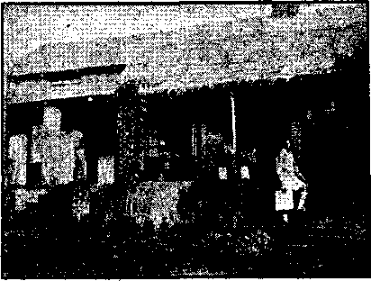
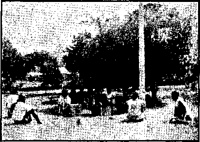

Contents
Appetizers
Stalin Stabs Poland in the Back
Systematic Murder of Liberty-Lovers
New Government
Counsel by J, P, Rutherford “God in Government”
Under the Totalitarian Flag
New Church Legislation in Japan
“Christmas,” or “The Mass of Christ”
British Comment
Published every other Wednesday by WATCHTOWER BIBLE AND TRACT SOCIETY, INC. 117 Adame St., Brooklyn, N. T., U. S. A.
Editor Clay tan J. Wood war th
Business Manager Nathan H. Knorr
Five Cents a Copy
?1 a year in the United States $1.26 to Canada and all other countries
NOTICE TO SUBSCRIBERS
Remittances: For your own safety, remit by postal or express money order. When coin or currency Is lost In the ordinary malls, there Is no redress. Remittances from countries other than those named below may be made to the Brooklyn office, but only by International postal money order.
Receipt of a new or renewal subscription will be acknowledged only when requested. Notice of Expiration Is sent with the journal one month before subscription expires. Please renew promptly to avoid loss of copies. Send change of address direct to us rather than .to the post office, Tour request should reach us at least two weeks before the date of issue with which it Is to take effect. Send your old as well as the new address. Copies will not be forwarded by the post office to your new address unless extra postage is provided by you.
Published also in Afrikaans, Bohemian. Danish, Dutch, Finnish, French, German, Greek, Hungarian, Japanese, Norwegian, Polish, Portuguese, Spanish, Swedish, Ukrainian; also special Australian edition In English.
OFFICES FOR OTHER COUNTRIES
England 34 Craven Terrace, London, W. 2
Canada 40 Irwin Avenue, Toronto 5, Ontario Australia 7 Beresford Road, Strathfield, N.S.W. South Africa 623 Boston House, Cape Town
Entered as second-class matter at Brooklyn, N.
under the Act of March 3, 1373,
Johnny Knew the Facts
The teacher was questioning Johnny. “So far, Johnny, haven’t been doing so well, this one should be easy, 'cloth’.”
little you Now, Spell
The boy’s face was a blank. He was stuck.
“Come, now,” urged the teacher, “surely you know the word 'cloth’. What are your trousers made of?”
“Oh,” replied the boy brightly, “my father’s coat!”
More Work for the Seams tress
A. little city boy who had been to the country was describing to another boy friend the big pig he had seen. “It was in a pen,” he said, “and it w'as afraid of the little pigs. They would chase the big pig around the pen, and after he fell down with exhaustion the little pigs pounced upon the big pig and ate the buttons off his vest.”—Farmers Magazine.
Not Frightening Enough
Farmer Hawkins was complaining to his wife that he could find no old clothes to put on the scarecrow,
“Well,” said she helpfully, “there’s that flashy suit son wore at college last year.”
“Yeah, but I want to scare the crows, not make ’em laugh.”—Lab or.
Trying to Remember
Frosh: I guess you’ve gone cut with worselooking fellows than I am, haven’t you ?
No answer from the co-ed.
Frosh: I say, I guess you’ve gone out with worse-looking fellows than I am, haven’t you?
Co-ed; I heard you the first time. I was trying to think.—Lull or.
Something fiihy Somewhere
Little Billy had just been told that an angel had brought him a little sister.
“Would you like to see her?” asked the doctor.
“No,” said Billy, “but I’d like to have a look at the angel.”
Mil judged
Mother: Willie, why did you kick your little brother in the stomach ?
Willie: It was his own fault. He turned round.
“And in His name shall the nations hope.”—Matthew 12:21, A.R.V.
Volume XXI Brooklyn N. Y,, Wednesday, December 13, 1939 Number 528
The Death of Poland
WITH the most highly mechanized army ever assembled, Germany obliterated Poland in eighteen days. In less than four years the pope, Hitler* and Mussolini destroyed the
Spanish Republic. Hitler destroyed Austria, Mussolini destroyed Ethiopia, II i tier destroyed Czechoslovakia, Mussolini destroyed Albania, Japan is busy destroying China, and Hitler and Stalin, two common murderers, split Poland between them; and no power of man will ever re-establish what they have destroyed.
The Poles did not stand a chance against Hitler’s new tanks. Personal bravery ent no figure. The tanks ■went wherever they pleased, and Uncle Sam was scared enough at their performance that the U. S. Army immediately bought 329 new tanks at $17,790 each.
When the Poles fled over the Rumanian border, with the German legions hard in pursuit, there was a time when 10,000 automobiles jammed both roads for a distance of twelve miles back. Some of these automobiles were fire engines and hook and ladder trucks loaded with refugees, trying to escape the Nazi terror. 202 of the Polish airplanes landed in Cernauti, Rumania, in such quick succession that in one instance a plane came down on three others, having no other place to land, with the result that the four were demolished.
What the tanks did not do, the planes, fitted with engines made by Pratt & Whitney, at Providence, Rhode Island, finished. They made a wreck of every Polish hangar in jig time. They gained a great victory over the women and children of Warsaw, about three thousand of whom were slain by the airplane bombings and in the ensuing bombardment of the city by the German troops. The Poles held out for twenty days against an onslaught that destroyed the water supply, electric plants and half the buildings of the city. They fought until their ammunition was exhausted. Two battalions of women soldiers fought beside their menfolk. Nine hospitals filled with the wounded were destroyed, along with all the monuments and churches. The only help the Poles received was a few letters written to the London Times.
Big Business Backs Hitler
In 1934 the secretary of state of the United States was trying to discourage arms shipments to Germany, but the United States army and navy officials worked in the opposite direction. Those officials helped design, develop and finance the Pratt & Whitney engines, sold in huge quantities in that year to Hitler, and now used by him to overrun the peace of the ■world. In the same year the secretary of state sought to discourage the sale of planes to Japan, and when he publicly announced that the Pratt & Whitney Company was the only company failing to meet the government’s wishes, the company surrendered, as far as Japan was concerned, but not as respects Germany. The barkers of the Pratt & Whitney Company arc great patriots and in a flagwaving contest would be the first to show sore arms.
Maybe you wonder how such high-minded patriots as Pratt & Whitney Company and their friends in the United States Army and Navy could be persuaded to.back a common liar like Hitler. Don’t be silly. It is purely a business matter. Pratt & Whitney are in the business of selling airplane engines and would sell them to the Devil direct if they knew how to get in touch with him. And the Army and Navy officials would help the cause along, in hopes it would whoop up the war business and result in promotions and bigger pay at home.
You would not expect the Jesuit-trained Hitler to tell the truth about anything; now, would you? You know it is only a little while ago he was saying such nice things about Poland and the Polish government and people. The British government has assembled some of these statements, and here they are:
In the Reichstag, May 21,1935, Hitler said:
We recognize the Polish State as the home of a great patriotic nation with the understanding and the cordial friendship of candid nationalists.
Again ip the Reichstag, February 20, 1938, Hitler said: •
The Polish State respects the national conditions in this country and that city [Danzig], and Germany respects Polish rights.
Again in the Sportspalast, September 26, 1938, Hitler said:
A State with 33,000,000 inhabitants will always strive to have an outlet to the sea. It was, therefore, necessary to find a way to an understanding. This way has been found.
Stalin Stabs Poland in the Back
By preconcerted arrangement, as soon as Germany had made the whirlwind drive that prostrated all efforts at defense, Russia marched in on a 500-mile line to take the half of the country allotted to the Kremlin murderer and his followers. Neither Hitler nor Stalin has any use for the other. What Hitler thinks of Stalin and his outfit is recorded in black and white in Reyhal and Hitchcock’s translation of Mein Kampf, set out as follows in the New York Times:
“1. The present rulers of Russia do not at all think of entering an alliance sincerely or of keeping one.
“We must never forget that the regents of present-day Russia are common blood-stained criminals; that here is the scum of humanity, which, favored by conditions in a tragic hour, overran a great state, butchered or rooted ont millions of its leading intellects with savage bloodthirstiness, and for nearly ten years has exercised the most frightful regime of tyranny of all time;
“Nor must we forget that these rulers belong to a nation which combines a rare mixture of bestial horror with an inconceivable gift of lying, and today more than ever before believes itself called upon to impose its bloody oppression on the whole world. We must not forget that the international Jew, who today rules Russia absolutely, sees in Germany, not an ally, but a state marked for the same destiny. But one does not conclude a treaty with some one whose sole interest is the destruction of his partner.
“Above all, one does not make them with parties to whom no treaty would be sacred, since they inhabit this world, not as the advocates of honor and truthfulness, but as the advocates of lying, deceit, theft, rapine and plundering."
In the Reichstag, January 30, 1937, Hitler made the following statement regarding Stalin and his followers, which all now know was entirely false:
I request the German workers to avoid all contacts and relations with these international parasites, and consequently it will never occur that one will see me dining and wining with them. Furthermore, any treaty links between Germany and present-day Bolshevist Russia would be without any value whatsoever. There is only one State with which we have never sought close relationships and with which we do not want to have any close relationships. I mean Soviet Russia. [In New York Times]
William Philip Simms, foreign editor for the Scripps-Howard newspapers, says, “Today there is not a statesman in Europe who would trust either Hitler or Stalin as far as a child could throw the Brooklyn Bridge. And they can’t trust each other.”
Double-crossing the Double-Crossers
The Russians claim that the thing that persuaded Stalin to hook up with Hitler was a conversation between Hitler and Sir Nevile Henderson, recorded by dictaphone and phonograph apparatus, in which Henderson tried to persuade Hitler to attack the Soviet Union. Hitler had the records played for Stalin’s delectation and then the two dictators and murderers joined hands.
Within six weeks from the start of the war Russia had seized control of Latvia, Lithuania and Estonia, garrisoning these countries with Soviet troops, and Finland was waiting, cap in hand, to know what it must do to satisfy Stalin and Hitler. The government of Poland had been wiped off the map, its officials having fled to Rumania. Lithuania had been given control once more of its ancient capital, Vilna.
By arrangement between Hitler and Stalin all Baltic Germans are going back to their homeland. Stalin is no fool, and knows that as long as there is one German left in the vast territory which he controls there can always be manufactured the excuse that Germans are being oppressed and a campaign for their liberation is necessary. As soon as the Baltic States have been divided between these two birds, the balance of eastern Europe will receive similar attention.
Within two weeks after Russian troops entered eastern Poland, Communist books and pamphlets had been circulated by the million, Soviet newspapers had sprung up and the motion picture theaters were in full blast, along
with evening classes boosting the Russian regime. Also, and this is not unimportant, the Russians confiscated the big Polish estates, turned them over to the peasants, and, according to Moscow dispatches, chased the former landlords into the swamps. .
Line-Up for World Control
The Totalitarian line-up for world control is now alleged to be Germany, Italy, Russia and Japan against the rest of mankind. It is natural enough that the four dictator nations (with a sympathetic Spain in the background) would wish to get together -to put Britain and France out of the running, and then put the heat on Uncle Sam. The alliance between the V a t i e a n and Communism, arranged through Hitler, is a corking idea.
The Chicago Tribune says of the forces now opposing Hitler, or supposed to be opposing him:
They made every mistake, as we can now see, omitting none. They let Hitler rearm. They let him move his troops into the Rhineland and build tremendously strong fortifications on the western front to prevent France from
Lookit who “our” and “we” turned out to be!
holding him in check. They let him absorb Austria, and by so doing they let him get on both flanks of Czechoslovakia. They let him have the Sudeten-land, an enormously strong military position, which threatened his flank, and they professed to be astonished when, a few months later, he swallowed the rest of the country which they had all but delivered to him. When they lost Czechoslovakia as an ally they lost a powerful army, well disciplined and well equipped, and an arsenal famous the world over, all of which is now at Hitler’s service. They let Poland join in the rape of Czechoslovakia to obtain an area which could not he held against German arms if the Germans should, ever desire to take it, and in so doing they managed to lose for . Poland a great deal of sympathy which she might otherwise have had when the conflict finally came. 1
The seizing of the governments of decent people by youths that have been trained in methods of cruelty and dishonor by racketeers is not so hard as most think. In the Manchester Guardian Harold Picton speaks of bis personal knowledge on the subject, and as the grabbing of America is openly threatened by every spokesman of the Roman Catholic Hierarchy, including its mouthpiece Coughlin, what he says is worth reading and thinking about.
In September, 1922, I was in Italy. The Fascist party was scarcely treated seriously. They were described to me as “silly boys”. A couple of months later came the March on Rome. After that the Italian people were powerless, and have remained so ever since. In the autumn of 1932 I spoke in Germany of the Nazi menace, but I did not find that German friends treated it seriously. At the end of January, 1933, Hitler was put in power by Hindenburg, and the German peoplehavebeen powerless ever since.
No Criticisms Allowed
It is a tenet of the Roman Catholic Hierarchy that none of its teachings are to be questioned or discussed. Hitler imbibed the same idea with his mother’s milk.
For criticizing the bargain between Hitler and Stalin more than 1,200 members of the storm troops and blackshirts were shot within two days and 51,000 were taken into “protective custody”. To be taught for years that the archenemy of Hitler is Russian Bolshevism, or Communism, and then to have Hitler fall in Stalin’s outstretched arms, was a little too much for some German stomachs.
It is interesting that the first martyr to be sacrificed by Germany because of refusal to “do his duty as a soldier7’ was August Dieck-mann, of Dinslaken, one of Jehovah’s witnesses. The date of execution is not known, but pub-
libation of the fact appeared in British newspapers seventeen days after the war started.
General von Brauchitsch, commander-inchief of the German Army, followed an order with the words “Forward with God for Germany”. The object of this is the same as the “Gott mit uns” slogan of 1914-1918, to try to impress the German people with the idea that God has fallen so low that He has to serve the whims of a man like Adolf Hitler.
On the German tanks invading Poland, the emblem on the side of the tank driver’s cab is a cross instead of a swastika. The object of this was to impress Poland, which is a Catholic country, with the realization that Hitler is a Catholic and that, after all, the “church” fully supports him in his ambitions to overrun the world. The cross and the swastika are virtually one, as indicated by the pictures showing the swastika being flown in front of Roman Catholic cathedrals in Cologne and elsewhere.
A dispatch from Berlin, dated a week after the war began, stated that “many Catholic churches have begun reading daily prayers for Adolf Hitler and his welfare”. Why not? He is a true child of the “church”, revealing all the characteristics that have made her famous and hated throughout her career.
Vatican Stands Back of Hitler
The Catholic bishops of Germany have issued a pastoral letter stating: “In this decisive hour we admonish 01)r Catholic soldiers to do their duty in obedience to the Fuehrer and be ready to sacrifice their whole individuality.
“We appeal to the faithful to join in ardent prayers that the Divine Providence of God Almighty may lead this war to blessed success and peace for our fatherland and nation.”
The archangel is shown, brandishing a battlesword and piercing a dragon with a holy lance, on the front page of Catholic papers. [New York Times]
A dispatch from Vatican City, sent after Germany and Russia had split Poland between them, stated that no word of religious molestations had been received and that—
The ehurch under the present Pope has no fight against totalitarianism as such and its relations with totalitarian Italy are currently good. [Baltimore 5 an]
The Devil’s plan for stopping the spread of the message of God’s kingdom, and the Kingdom itself, is to make the whole world totalitarian. It is inevitable that in this work he would have at his side his own church and his own spokesman. It is certain that the utterances of the Roman Catholic Church will be more and more outspokenly on the side of the dictators until the time comes for them to rend her and throw her to the dogs.
America and Britain will find, as did Austria, that when the time comes for the hirelings of the Hierarchy to betray7 their countries they will do so without the least hesitation. Indeed, they threaten it boldly, even now, over the radio.
In the destruction of Austria, the army, all dressed and ready to go into action, received orders not to leave their barracks until the German army had seized the country. When the German troops entered they were astonished to find no resistance, and to find the excellent food the Austrian army had been having as compared with their own meager rations. The first act of Germany wras to remove from Austria its store of gold and all fresh fruits, butter, eggs, grain and the better grade of meats. Nazi and Gestapo agents visited every house and compelled owners to display flags and decorations or go to a concentration camp.
The Key Nation
Poland turned out to be the “key nation” of the second World War, as it had been often suggested by publicists might be the case. The country lies in an unusually exposed position. The only natural boundaries are the Carpathian mountains on the south and a strip forty miles wide on the Baltic sea on the north. The borders between Germany and Poland and Russia and Poland are imaginary lines drawn on a flat plain. Of the 30,000,000 population, it is calculated that 21,000,000 are Poles, 4,000,000 are Ukrainians, 3,000,000 are Jews, 1,000,000 are Germans, and 1,000,000 are White Russians. The Poles are Slavs, but liberty-lovers, and they have been dreadfully misgoverned for centuries.
At the close of the World War 3 percent of the people owned 44 percent of the land. The peasants lived in hovels hardly fit for pigs; 40 percent of them were illiterate; 30 percent of the workers received less than $3.50 per week; 23 percent received less than $2 per week; many had no work at all; fires were kept burning because the people could not afford to buy matches. Subsequently, conditions improved somewhat.
As late as 1937 there were strikes of peasants against their intolerable hardships. Resenting the efforts of the Fascist class to keep in the saddle, they blocked the roads, set lire to food shipments, destroying butter, cheese and eggs in large quantities, cut down fruit trees and poured petroleum over vegetables. People have to be badly treated to make them do things like that.
The Polish people, striving for liberty in 1793, 1813, 1831, 1848, 1863, 1905, and 1917, have always been extremely interested in the American Republic, which Kosciusko and Pulaski helped to establish. The broadest thoroughfare in Warsaw was named for Washington. Poland attracted the marked attention of the Western world by the severe walloping it gave the Bolsheviks at the gates of Warsaw in the summer of 1920. In 1927 the ancient Polish crown and scepter were found in a rubbish heap in the Dresden (Germany) Historical Museum. '
A Simple-minded, Hard-working People
The largest cake ever baked was made for the king of Poland in 1730, though it must be admitted that it was a German baker that made it. The cake was 36 feet long and 16 feet wide. Into it went 1,800 quarts of wheat flour, Ij barrels of yeast, 326 quarts of milk, 3,600 eggs, and 3 pounds of nutmeg, '[’he cake, whieh was kneaded on a huge sliding draw plate, was baked in an oven fitted with twelve chimneys. When rolled out of the oven it was loaded on a long wagon drawn by eight horses, and thence to the headquarters of the army review, where it was cut with a knife 20 feet long, specially made for the purpose.
Poland is to the east of Germany, and the east is more leisurely than the west. Polish officials do not allow themselves to be disturbed while tea is being drunk, and some see in this relies of the reign of the ezars.
Polish women are among the hardest-working persons in the world, and are frequently worn out at 25 to 28 years of age. It is claimed that they never have a full day of rest. They do most of the reading, writing and figuring for the family, take care of the entire house, cook, bring up the children, sew for all the family, and help with the heavy farm work. Women under 21 are not allowed to emigrate from Poland unless accompanied by parents or relatives.
A Polish bride is expected to kiss all the guests at her wedding. One of them at Tecsoe DECEMBER 13, 1939 had 7,001 guests, and it took her four hours to get around.
Polish families not equipped with bathrooms carry bath cards, which must be stamped once a month to show that the holders have been properly bathed. Persons over 70 or under 10 are excused.
Oppressed by the Racket
Like every other people, Poles are oppressed by the religious racket, and are very subject to it. Most Poles are Roman Catholics, but among the Polish nobility-there are some of the Calvinist faith who have held out since the Reformation. Though few in numbers, these have huge influence on account of courage and independence. There are more than 3,COO,000 Jews, the principal persecutor of whom is a Roman Catholic priest, the “Reverend Father” Trzeciak. Wherever he goes anti-Jewish riots follow'. Being a zealous chifd of the Devil he is, of course, anxious to do his father's will.
Like every other people, the Poles have a marked tendency to hero-worship. Though deceived for centuries, they still think some of their own race will be their great emancipator. The Polish government as it existed from 1920 to 1939 was largely the creation of one of these, Marshal Joseph Pilsudski; he was a good deal of a man as men go, and as dictators go, but he was a militarist.
In 1926 he locked the doors on the Polish parliament, thus making himself absolute dictator, but resigned on account of ill health. But even in retirement he controlled the country. He regarded the Polish parliament as unfit to rule, and did not hesitate to call it every name he could invent. He called the Polish constitution putrid carrion. He was so highly esteemed in Poland that his word was law. A woman deputy was jailed six months for making uncomplimentary references to him in a political address. lie was a Lithuanian by birth, gruff, profane.
Pilsudski was a dictator by proxy, letting others rule, but cheeking them up sharply when they went wrong. lie hated administrative detail, was well educated, personally courageous, a great reader; humorous and charming in his personal relations, a devoted husband and father, with a dislike for social activities. When he died all Polish ncivspapers appeared with black borders and the army
7.
and: civil service went into mourning for six weeks. He asked that his heart be buried at his mother’s feet, and his request was granted. He always affirmed that she was the chief inspiration of his patriotism for Poland.
Only One Paderewski
One can hardly think of Poland without thinking of Paderewski, the world’s best pianist, and Poland’s first premier. He is still living at 78, in retirement in Switzerland. He thinks it most unfortunate that Poland ever embarked on the totalitarian road, government by a clique instead of by the people. He has been a voluntary exile from Poland since Pilsudski overthrew the government in 1926. His name was not included in the clique list of 30,000 persons, mostly militarists, entitled to vote in Poland in 1933. Four years later, when he issued a call for the abolition of concentration camps, and a warning against trusting the promises of Hitler, the Warsaw paper which published the manifesto was seized and not even allowed to explain the reason for its confiscation.
Poland has the largest Jewish population in Europe, and for years before the infamous paper-hanger seized control of Germany was the scene of terrible pogroms. It was necessary to close the University of Cracow for six months on account of the intolerable mistreatment of Jewish students. Even after the closed universities wTere reopened, Jews were forbidden to eat in the restaurants, and other students would not greet them or have any association with them. In the classrooms they were compelled to sit on the left side.of the room, while those who hated them wore green ribbons and sat on the right.
Polish farmers would not sell milk to Jewish dealers. When former Premier Bartel, then a college professor, proposed the expulsion of two students guilty of leading anti-Semitic riots, he was rotten-egged. Rotten eggs are a substitute for brains. Many Jews and some others were killed in riots from time to time. Many students were attacked with razor blades attached to long sticks.
The Nazis of Germany carefully did all possible to increase the burdens of the poor Poles, both Jewish; and non-Jewish. Right while Poland was wrestling with the problem, the German government, if such it may be called, expelled 14,000 Jewish Poles and chased them over the border into Poland in bitter weather. The province of Pomorze, or the Corridor, as it is known, next to Germany, became the center of persecutions.
Pierre van Paassen, who visited Poland seven times in eight years, reported .that on every occasion he found the condition of the Polish Jews worse than on the previous visit, and on the last occasion 85 percent of them were paupers and another 10 percent were destitute.
The Weaker Neighbors
: r- The clique that has ruled Poland for a decade or more has not en-. deared itself to mankind by the / way in which the weaker neighbors v': have been treated. The capital of Lithuania was seized in 1920, For eighteen years thereafter the Lithuanians held Poland • as unworthy of rail, air, postal or other relations, but in March, 1938, following Hitler’s technique, the Poles massed a great army on little Lithuania’s border and announced that “the brutal and oppressive treatment of the 200,000 Poles in Lithuania must cease” and that all claims to the former capital, Vilna, must be surrendered. The Lithuanians yielded, because compelled to do so, but their constitution still says that their capital is at Vilna, now theirs once more.
Poland’s government made another big mistake when it learned that Hitler’s bluff regarding the Sudetenland of Czechoslovakia had worked. In the hour of stress on their neighbor to the south, when Germany and Hungary were pressing the little republic on every other side, Poland threatened war unless Tesehen were surrendered to it. This was a holdup, and there are not many who love justice who are grieved when a burglar gets hijacked, even though all decent people despise Hitler, the international hijacker.
In the year 1667 Poland included what is now Lithuania, and most of Ukrainia as well, and it is hard for the Poles to forget these ancient borders.
Hemmed in by Germany
Poland was always hemmed in on the north and west and later on the south by Germany, and Nazi Germany is not a good neighbor to any country. It was essential to the continuance of Poland as a separate country that it should play to keep Germany and Russia apart. The moment they joined hands, that moment the doom of Poland was manifest. $ein Kampf tells the Nazi technique of destroying one’s neighbors, and the technique was followed to the last detail in the destruction of Poland.
A factor in the overrunning of Poland by Germany is that the large Jewish population of the former state boycotted German products, in the effort to mitigate the mistreatment of Jews in Germany, and this boycott angered the Nazi lords. As early as 1933 the people of Warsaw anticipated trouble with the Hitler regime oyer the 1,400-mile border between the two countries. As early as 1935 the Rota song, a hymn of hate for Germany, was popular in Poland, with an improvised line, “Poles spit on Germany,” not calculated to provoke brotherly love.
In the spring of 1937 many Polish newspapers, especially those in provinces bordering on Germany, were claiming that the Polish minority in East Prussia (the part of Germany to the north of Poland, and which lies between it and the Baltic) was being "persecuted both as Poles and as Catholics”. This seems to suggest that religion had something to do with the swallowing up of Poland.
In January, 1939, the Germans and Poles had a big celebration in Warsaw commemorating the fifth anniversary of the Polish-German non-aggression pact. Within four months Hitler denounced the pact and inside of eight months the German armies were hammering at the gates of Warsaw.
Access to the Baltic

When Poland wras recreated it was deemed essential that she have access to the sea, and so to the rest of the world, so the fiction was created of the strictly German city of Danzig as being made a free city: the Polish goods could move through it in either direction without molestation. The Poles, besides, were given fifty miles of the coast, the "corridor” between East Prussia and Germany proper.
On this strip of coast, a few miles north of Danzig, the Poles made the new port of Gdynia, and in ten years built it from a fishing hamlet of 200 inhabitants to a more important port than Danzig itself. The tonnage was increased, for Danzig itself, but was mostly limited to coal. The Poles virtually boycotted the German eity, and naturally this got under the hide of the Germans. For many DECfiMBER 13, 1939 years when the railroad trains passed through the Corridor, with the doors locked, travelers were compelled to show their passports four times—twice at each end of the corridor. This nuisance was subsequently mitigated, too late to mend the damage. To understand Danzig and the Corridor it is necessary to remember that the local Germans and Poles have hated one another fervently for 700 years. ■
The Germans have never been able to. see why there was any more need for Poland, to. have a harbor on the Baltic than for Switzerland, Czechoslovakia, Hungary, Bolivia or. Paraguay to have ocean ports; hence the Polish corridor, the population of which in 1910 was 68 percent German, has seemed to them provocative. In the first seven years of Polish rule 990,000 Germans left the Corridor.
The Poles have never been able to see why the Germans should object to the corridor arrangement. The United States has a corridor across Ontario from Buffalo to Detroit, and Canada has a corridor across the state of Maine/The United States has a corridor bef tween Alaska and the state of Washington.
The German war against Poland was waged because Hitler demanded the outright annexation of Danzig and a German road across the Corridor. Fear that he meant what he said caused the Poles to eall up 1,000,000 men. Hitler at once set his propaganda machine in operation and the war followed in a few weeks as a matter of course.
Russia and the Ukraine
There are 4,000,000 Ukrainians in the southeastern part of Poland and their lot has.not been a happy one under the rule of the clique that has governed Poland. They have been hated because they speak a different tongue, have a different religion (Orthodox instead of Roman Catholic), and have had nationalistic ambitions. Their newspapers have been savagely censored. Many of them have been beaten up when they wTere in prison.
Ukrainian villages to the number of 700 were raided at night and men and boys were compelled with their bare hands to wreck their own reading rooms, libraries and co-operative stores, and to sign statements that they did these things of their own free will. Some of the citizens were beaten to death. In some cases women, old men and children were beaten. Medical treatment was refused. Hospitals were forbidden to take in the victims. Lawyers were forbidden to defend clients. Even the
German Nazis could hardly have done worse.
In one Ukrainian village the mayor was tied to a horse and dragged along the road while police followed, beating him over head and shoulders. A woman of 75 was dreadfully beaten. A child of nine was pushed aside so roughly that it died of concussion. Many women and children spent two consecutive nights in a forest in a pouring rain rather than be visited by these Polish police. The tortures of Ukrainian prisoners, as revealed in the Manchester Guardian, and which took place by the Polish police two years before Hitler seized Germany, could not have been worse. The torturers were Roman Catholies, and hence well trained in the most devilish organization of all time.
Russia feels no compunctions of conscience about dismembering Poland. Russia has millions of Ukrainians; too.
Latest reports of Gdynia [now Gotenhafen] are that it now has 50,000 population and not less than four miles of brand-new concrete wharves, a harbor of 500 acres area and a breakwater nearly two miles in length. The port is open the year round.
Dictators brook no criticisms of their acts, but they sometimes have to listen to accounts of their misdeeds. At a trial of political prisoners at Brest-Litovsk a man 73 years of age, marshal of the first senate of the Polish Republic, accused the Pilsudski group of assassinations of political foes and the illegal expenditure of $1,000,000 of government funds for political purposes. He was followed by the Polish patriot Voivod Korfanty, who said:
“If the Germans in Poland have a grievance against the Polish Government they can complain to the League of Nations and the government must give a satisfactory explanation. But what are we Poles to dof What am I to do, who spent many months in a Prussian prison but was never treated there so terribly and never so tjiuoh humiliated as , at Brest-Litovsk?”
The president of the court interrupted him and warned him not to mention the Brest-Litovsk prison. Thereupon, M. Korfanty refused to give further evidence. [New York Times]
♦ In a courtroom in a provincial Polish town recently, a youth who had been arrested was quizzed by the judge to test his mental powers. He was asked how many countries there are in Europe. His lawyer solemnly protested, insisting that his client hadn’t read the morning paper.—The Nation.
Systematic Murder of Liberty-Lovers
Frank L. Kluckhohn, able and honest war correspondent of the :JrTg/ New York Times, personally witnessed in Spain hundreds of peo-’ 1 "™ pie at the moment of execution, or just after they had been executed. If, when Franco seized a town, the people did not publicly and immediately acknowledge the conqueror. they were at once executed or imprisoned. The same system was later used in Poland. Portions of Poland which were conquered by German troops were immediately mopped up in the same manner. The people must either “Heil Hitler” or be destroyed. Don’t get the idea there was anything civilized about the war in Poland. No war was declared and no mercy was shown to either combatants or non-combatants. The Lord’s name for this accursed system of butchery is well ehosen, “The abomination that maketh desolate.” Franco had the “blessing” of the Devil on his work, and Hitler had it also.
♦ The United States adamantly refused to sell helium to Germany under any considerations, but when war was in the offing, and within less than a month of the time when it broke out between Germany and Poland, Uncle Sam sent a gift of 500,000 cubic feet of helium to Poland. It was to be used for stratosphere test flights. But maybe the Germans got it for use in their zeppelins after all.
♦ Any person with a heart must wince at the news from Poland that boys of 14 were called to, the colors. It will be recalled that in the long-drawn-out war between Paraguay and Bolivia there were Paraguayan boys in the trenches so young that they cried for their mothers in between the battles. What a living hell Satan’s world is, anyway 1
♦ A report from Russia is that in the numerous purges so many men were murdered for alleged unfaithfulness to their tasks, and their subordinates also, because they did not complain against their chiefs in time, that there is now real perplexity in finding men with enough experience to fill the complicated jobs that await them.
♦ Pioneering, this month in this beautiful seaside city of Natal, Durban, I sometimes make use of one of the rickshas which ply for hire, to reach my territory.
A ride along the lovely Esplanade in the freshness of early morning is delightful although the motion of rickshas is rather uncomfortable for anyone not accustomed to traveling in them.
The photo I enclose gives some idea of the ricksha pullers, or “boys”, as adult native men are often called out here.
Headdress of Zulu “chieftain”
The face of this fine Zulu “boy” reminds one of Haille Selassie, and he has a very pleasant and dignified manner. He is the “Chief” of all the ricksha “boys” in Durban, and so he appropriately wears a bigger headdress than any of the others. There seems, to me, to be a lesson in the way these poor people use whatever material they are able, at little financial cost, to obtain, and with patience and care make apparel protective, effective, artistic and suitable, to their ideas, to their requirements.
The headdress of this “Chief” is a work of art. The border is composed of white pigeon wings, and then comes a row of red and white paper roses arranged alternately. Then a row of turkey feathers, and so on, all little spaces being nicely filled in with down. Then at the base, horns of cattle and a headband of fine-colored beadwork in an intricate and elaborate design. The “finishing touch” is attained by the two shiny blue glass globes, such as are used for “Christmas” tree decorations.
The front of the tunic is of the same fine beadwork at which work the Zulu women excel, as also they do in basket weaving, and grass-mat making and pottery.
Over the tunic hang chains of seashells, pods and beans and other seeds of “wild” trees, bones, beads and other quaint ornaments.
The cape around the back of the shoulders is of carefully moun ted turkey feathers from which dangles a mantle of soft fur “tails”, l^is white hose is really whitewash “picked out” in a lacy pattern giving the appearance of openwork.
The Zulu people are intelligent, clean, and if fairly treated are docile and faithful servants. Most of them are very poorly paid for any work they do, and we are glad to remember that the promise of the blessings of the Kingdom will bring joy and happiness to nearly all of them. At present life is hard for the m.—-A lice Cooper, Natal.
Reared by Baboons
♦ The little colored boy, named Lucas, who was raised by a tribe of baboons in South Africa until he had reached the age of 12, is now able to tell of his life in the wild. Until captured he went on all fours, slept in the bush entirely naked and lived by robbing ostrich nests of their eggs and wild bees of their honey. Crickets and prickly pears formed more staple articles of diet.
ZUGHTEOUS - ' .
. GOVERNMENT
■ ■ .. . ■ ■■■■■■■
religious book banned
♦ The banning of a Bible study book entitled Riches, by the well-known American religious teacher, Judge J. F. Rutherford, has caused some concern among the followers of the judge in South Africa. Actually, five books by this author, all on religious subjects, were banned from the Union by the Department of the Interior, but a particular protest is being made by the religious organization concerned in respect of the book Riches.
This organization has made repeated protests to the Minister, emphasizing that Riches is a seriously-written Bible study text-book which has been read and used by many thousands of people throughout the Christian countries of the ivorld. It was contended that hundreds of such persons lived in the Union and would consider the banning of the book an act of injustice and a violation of the principle of religious liberty.
NO REASON GIVEN
In response to a request by the Watch Tower Bible and Tract Society, which issued the book, the Department stated that it was unable to furnish reasons for the banning of Riches.
It is understood, however, that the belief is held that the message contained in the banned literature is likely to cause trouble among the non-European section of the population. This contention is denied by the issuers of the'volume.
They admit that in the kook certain truths are forcefully expressed, but they hold that the language used follows closely the language of the Bible.—The Sunday Times, Johannesburg, South Africa. •
Politicians with Ivory Domes
♦ May I ask why such a book as Riches is banned? Clean, truthful, noble, it is uplifting to young and old. Yet the stores and paper stalls are teeming with filthy stuff appealing only to the very worst in the youth of our country. One wonders what kind of citizen
12
the future will produce.—A. V, Whelan, in the Johannesburg, South Africa, Star.
♦ I wholeheartedly agree with A. V. Whelan’s protest in the Star of July 6 regarding the ban imposed on the book Riches, by Judge Rutherford. One has but to glance through the pages of this book to realize what a wealth of knowledge is contained in it. Knowledge that practically every person who is imbued with a feeling of good will towards his fellow men is seeking. In these days of trouble and continual tension, I am sure that people wonder and dread what the ultimate end will be. Any reasonable-minded person cannot fail to sec that there is no escape from world conditions as they are today, except by complete faith in Jehovah God through Jesus Christ, and Riches solves the problem. One cannot fail to see that the banning of this book is a mistake on the part of our censors.—Jim Grant, in the Johannesburg, South Africa, Star.
♦ An open letter to the City Commissioners : Have we religious persecution in the City of Camden? Why should any such thing happen, as took place on Broadway in front of the Broadway Methodist parsonage last Saturday afternoon?
I hold no brief for, nor do I have any faith in, the movement known as “Jehovah’s witnesses”, nor do I agree with, much less accept the teachings of Judge Rutherford. But when I see the city police act, and do, as they did in front of my home last Saturday afternoon, then my Americanism rises in positive protest against what to me was but little less than brutal treatment of a group of men, women and little children, who were quietly walking up and down Broadway carrying signs announcing a religious service to be held on Sunday.
“Take them off! Take them off 1” the police cried, then proceeded to pull the cards off the men and women and little children.
When automobiles with loud-speakers can drive up and down Broadway raucously blaring their announcements; and sandwich men can parade back and forth unmolested by the police, then I see no reason for such treatment of these sincere people, and perhaps more sincere than some of the religious people who make the complaint.
It looked too much like just plain religious
consolation
Kingdom message in Zomba, Nyasaland
intolerance and persecution. Will the time ever come when those in authority will realize that just such things tend to popularize the cause they represent?
I do not know who gave the police their orders, but who ever did simply served warning on every other religious group in Camden.
The humblest religious group in the City of Camden has as much right to their beliefs, and their methods of worship, and means of advertising their religious services, as any other and should not be molested, but rather protected by the police in an American city, so long as they proceed in an orderly manner, and these people were on Saturday. [June 10, 1939]
No city official should treat any religious group as the followers of Judge Rutherford were treated on Saturday.
From an American, who believes in religious liberty.—Thos. J. J. Wright, pastor Broadway M. E. Church, in Camden, N.J., Courier Post.
♦ Locusts broke out in Bromsgrove, England, a town of 22,000 near Birmingham. It seems that the locusts had originally planned to have a public lecture at De Grey’s cafe on the subject of “Fascism or Freedom”, but “Reverend Father” Warner put the heat on the De Grey outfit and after 10,000 leaflets, besides posters and banners, had been pre-DECEMBER 13, 1939 pared, they welched, on the ground that some of their best customers were Catholics.
With the co-operation of the town clerk, police and Market Hall superintendent, the meeting was switched at the last minute to Produce Market Hall, for which no rental was required. Seventy loeusts broke loose, with six sound-cars in action. Information marches covered the entire town for hours at a stretch with specially worded placards reading as follows: “Catholic Fascist Action,” “Fearing Exposure,” “Oppose Freedom of Speech,” “Is this Rome or Britain?” “Religionists oppose Christians,” “Cancels use of Local Hall,” “De Grey’s Cafe Canceled,” “Come to,” “Produce Market Hall,” “Sunday at 6:30,” “To hear ‘Fascism or Freedom’,” The placards were in red, green and blue.
The meeting was a big success. No seats were available, but 250 Bromsgrovians stood up and listened to the lecture, which went through without a hitch from the two sound-cars used for the purpose. As the chairman was giving the closing announcement one of a group wearing Catholic “Sacred Heart” badges demanded a debate, but was informed the hall was not engaged for that purpose. Much literature was placed; numerous requests for back-calls were handed in, and there were 16 persons of good will at the Salvation study started the next Sunday evening in the home of a person who attended the lecture.—C. Hutchings, England.
Depot for Kingdom message, Nyasaland
Kingdom Blessings in Cuba
♦ Witnessing in Cuba brings peculiar experiences. Recently, in a small dry-goods shop, the proprietor at first accused me of being out of my head. Then, when Scripture was quoted, he admitted that he believes that the Bible is the Word of God. Then he obtained some literature, and finally listened to Spanish records P-100 (“Cleansed World”) and P-19, P-20 (“Suppressing the Truth”). Then he went to my grip, without a word, and selected a Bible and the Uncovered booklet, and said to his wife, “This man has brought to us the things that we should know. We give thanks to the great Jehovah.”
A very different experience was had with Alexander Vernon, ex-c a tee hist of the Church of England. When approached with the literature he said Rutherford ought to be burned at the stake, because he forbids people to go to church. His attention was drawn to the Scriptures which show that the so-called “churches” are prison-houses, whereupon he said I ought to be so burned, as well. He accepts the prayer book, not the Scriptures, as the guide to life everlasting. This man’s responsibilities are great, because he has had in his home for a long time the book Enemies and the booklets Cure, Righteous Ruler and Face the Facts. Oddly, he admits that the general outlines of Judge Rutherford’s writings are the truth. When his attention was drawn to the Scriptures which show that the early church was formed, not by those who upheld the teachings of the scribes and Pharisees, but by those who broke away from such teachings, he had no answer. He thinks that some day soon the church organizations will
Transcription meeting in Nyasaland
bring forth the true gospel to preach to all mankind. This gentleman is unwittingly looking for the day when these so-called “ministers of the gospel” will, every one of them, be found in their pulpits and on the corners of the streets, encouraging mon and women to go to war.—Walton Jones.
It Happens in Trinidad Also
♦ On our way back from a two-day outing with the sound-car the engine gave trouble, in a small village about seven miles from Toco, the nearest town. The villagers, who gave us all possible assistance, said they were not very sorry we broke down, because they always saw this “thing” passing and wondered what was meant by “Kingdom Message” on the speaker, and this was their opportunity to know something about it. Certainly it was, for we opened up “Big Bill” and let them have an hour’s lecture. We were then provided with dinner and quite comfortable though not very soft beds. The next day, before leaving, we gave them another blast of the trumpet, and left some literature, for which they gladly contributed.—R. G. Mills.
(The experiences of Jehovah’s Kingdom publishers are the most interesting and varied of any people on earth. Theirs is the most happy, useful and blessed life of all.—Ed.)
Swansea Information March
♦ First bystander (shortsighted physically) : My word—look—that’s strange—'Religion is a Scare—’
Second bystander (long-sighted mentally): ¥es, it is strange, but it is true; and furthermore, I must say that I admire that people because they have no truck with either the Nasties or the Fastics.
Immersion in Nyasaland (always referred to in central and southern Africa as “going to Jordan”)
♦ Satan has put fear into the Greek government, causing his representatives there to use their power in an endeavor to frighten faithful Christians and turn them away from Jehovah God. Satan’s efforts, of course, have failed and will continue to fail against all who are faithful to the Theocratic Government. The Devil knows that his time is short, and he is taking desperate measures. This action against Jehovah’s servants in Greece is corroborative proof that Armageddon is near.
Report of the Arrest of Jehovah’s Kinudom PunntsHEus at Athens, Greece (As related by a publisher who was present at the hearing and release of the witnesses)
At the meeting place, just before the meeting was to begin, twelve officers rushed in and arrested 74; 39 men and 35 women. They were placed in various prisons in Athens; none were mistreated; any of their friends and relatives could visit them and bring them food or anything else for their comfort.
The servants of the company at Athens were placed together in one prison, separated from the others. While in prison, from time to time they were told that they would he sent to one of the islands as exiles for a year, islands that have no water, and water would be sent to them once a week by boat. Women that were arrested with their young daughters were told that they would be separated from their daughters, being exiled to different islands.
After 21 day's in prison with such experiences, they brought the men a paper to sign, a pledge that they renounce their belief, atid told them that if they signed the pledge they would be set free, but if they' would not sign it they' would be stmt into exile. One old lady, 8.1 years of age, and two others, signed the pledge; all the rest refused and they were told to get ready' to go into exile, and they DECEMBER 13, 1939
Jehovah’s Kingdom publishers and company headquarters, Zomba, Nyasaland
did so by having their friends or relatives bring their suiteases and other things needed while in exile, and everything was ready.
On October 27, Friday, they were told that the next day, Saturday', each would hear the sentence.
On Saturday, 10 a.m., all were brought from the various prisons to the palace. Word had previously been sent to all relatives and friends of the witnesses, asking them to be present. When every'thing was ready, the Minister of Education read the charges against them:
They were against the “church”;
They were against the government;
They held meetings without the license the law requires; ■
They said all governments were ruled by Satan;
They refuse to salute the flag; and,
They do not believe in the “saints” and the “Holy Mother of God”.
For three hours the minister had others read portions from our books, booklets, Watchtower and Consolation that had been gathered from a careful examination of them. During the reading, the statement that Abraham, Isaac, and Jacob, and the prophets, would be the earthly rulers during the thousand-year reign of Christ was read. The minister turned to Kingdom publisher Kttranassios and said, “If the government of the world will be turned over to the Jews, what are you going to get out of it1?”
When the question concerning the saluting of the flag came up, the minister said to Karanassios, “If we do not salute the flag, what shall we salute t” Answer: “The truth of Jehovah God.”
After the reading was over, the minister of education pronounced sentence.
The servants of the company: One year exile on a certain island.
Other witnesses: Eight months exile.
Women: Six months exile.
“Now,” he said, “this is my judgment against you, but authority above me says you may go free.”
After making this statement, he asked all of the prisoners to go out of the room, hut their friends were to remain. When only the friends and relatives of the publishers were present, the minister said to them, “These people are good people, but something is wrong with their minds. They have been deceived. You, their friends, should try to bring them back to the Orthodox Church.”
Out of about 25 newspapers published in Athens, only one published the arrest; the first day on the third page, with no few lies, and every day thereafter about one fourth of the first page and a column inside were devoted to lies about Jehovah’s witnesses, relating the history of Jehovah’s witnesses from 1874 up to the present time. Never was such publicity given to Jehovah’s witnesses in Greece up to this time.
The purpose of all this was to intimidate the witnesses; but in this they have failed. They have also confiscated all the books, booklets, typewriters, and everything else in the office except one printing press. Even the personal property of the witnesses who worked there, everything, was taken away. ■
EXPERIENCES
-Before this experience, two Jonadabs of the age for military training had refused to put on the uniform and take arms. They were taken from the lowest rank officer up to the general, and in each case they gave the testimony of the Kingdom to them. Every one tried to persuade them to put on the uniform, but to no avail. Then they were told one evening while in prison that they would he shot the next morning if they would not change their minds.
The next morning found them unchanged; so they were ordered executed. The officers asked them to put on a cover over their faces, but the publishers said that was not necessary. They were then taken before the firing squad, the order was given, and the soldiers fired, but they used blank cartridges, Seeing their firm stand for the Kingdom, the authorities freed one of the witnesses and the other was placed in the prison again.
Two publishers who were placing literature in the city 8f Tripoli were arrested and brought before the judge, and the judge said to them, “My judgment concerning you is that you should have a book store in the center of the city square. Let them go free and do not bother them any more.”
Note: We will translate a few articles from the papers at the first opportunity. These contain pictures of Pastor Russell, Judge Rutherford, and the covers of our booklets (Intolerance), all of these on the front page of the paper.
(The excerpts from translations which now follow show the desperate anxiety of the clergy to trump up something against Jehovah’s witnesses and so save their own hides. Such items are always written by the clergy.—Ed.)
FOUNDATIONS OF GREEK SOCIETY SHAKEN the undermining action of Jehovah’s witnesses ' COMES TO LIGHT
WHAT THE OFFICIAL INVESTIGATION REVEALS
Fifteen days ago the Police Organization of General Safety of Athens found the holy meeting of Jehovah’s witnesses. No one expected that the discovery would mean the eleansing of one of the greatest social scourges that had as a target the Greek Orthodox Church and the general government structure.
When the police entered the hall they found the number of 74 reading from their inconsistent books. One of them, as was proved later, was the leader, who was asking them how many books they had placed for their propaganda. The next day the police found it necessary to search their homes.
At Lomvardou 44, at the home of the leader of the heresy, Athanassios Karanassios, the authorities found themselves confronted with one of the most perfect propaganda organizations, thoroughly operated, with the greatest and most up-to-date machinery for the manufacture of their propaganda. Entire rooms had been turned into up-to-date printing shops and book-storage houses.
Besides the reading matter and means of printing it, the famous house on Lomvardou 44 is one of the most important caves in the East.
Persecuted in all civilized nations, Jehovah’s witnesses had their base in the home of Ath. Karanassios, the official representative in Greece of the American International Bible Students. In a careful investigation into the activities of Jehovah’s witnesses in Greece, it did not take long to bring to light things the ones making the arrest did not believe could be possible.
Jehovah’s witnesses, whom the Grecians took as a joke, are revealed as one of the most up-to-date conspiracy organizations, branching off as an international one Having as its purpose the methodical undermining, from the foundations, of the church and also the nation, with Satanic means.
“The brethren” of Jehovah’s witnesses, from the first examination by the Athens Police Organization of Safety, were revealed as common deceivers; an -organization against the government and society having .always as its target the ehurch, the priests, and the army."
The arrest of 74 of Jehovah’s witnesses brings to light all the machinery of a dangerous and antisocial heresy that had been furnished money from outside, and which operates in the heart of the Greek nation.
Under the guise of innocence and religious unity, the organization of Jehovah’s witnesses has set as a target not only the church and the clergy, but the machinery of the state, which in the unnumbered printed matter is called the organization of Satan to impose upon the people his rule.—-Translated from Nea Hellas (front page), Greek newspaper published in Athens, Greece, on October 22, 1939.
(To be continued)
COUNSEL
THE Roman Catholic Hierarchy through its newspapers makes announcement that the Hierarchy carrying forward “Catholic Action” is prosecuting a campaign, or “crusade”, for “God in government”, the announced purpose of which, according to the press, is to “defend the Republic against atheistic propaganda”.
' On the face of it that announced purpose of the Hierarchy sounds very good, for the reason that if the government were controlled by the Almighty God, such would be very desirable on the part of all persons who love righteousness. It is written in the Bible, “Blessed is the nation whose God is Jehovah.” (Psalm 33:12, A.R.7.) The Catholic Hierarchy has shown plainly that its God is not Jehovah. On the contrary, the Hierarchy persecutes everybody that advocates Jehovah’s government. The Catholic “crusade” is very misleading, and that program cannot succeed.
Jehovah God long ago promised that He would permit the Devil to remain in existence and to carry on his activities until- God’s own due time to have His own name declared throughout the earth and then to exercise His power by destroying Satan and his entire organization. (Exodus 9:16) It was in the days of Nimrod that governments began to be organized, and Satan was the invisible ruler of that government. From that time until now men have organized governments, and there have been many men among these governments who desired to see righteousness control the governments, but no one has yet experienced a righteous government amongst men. The Lord Jesus Christ, who is to really rule the world in righteousness, when on earth declared that Satan is the god or prince of this world, meaning the invisible ruler of the governments of this world, (John 12; 31) The apostle Paul fully corroborates this. (2 Cor. 4: 4) Every government that has ever existed on earth has indulged in practices contrary to the law of Almighty God, for the reason that the invisible ruler of every government has been and is Satan, acting together with the wicked demons. The fact that there have been some godly men connected with earthly governments endeavoring to bring about a righteous rule ia no proof whatsoever that any government has been conducted according to the,will of Almighty God. The facts and the Scriptures are exactly to the contrary.
Centuries ago Jehovah gave His word that He would in His own due time establish on earth His government, which is the Theocracy, that is to say, the government of Jehovah by and through Christ Jesus, who shall rule the world in righteousness. He caused to be recorded His prophecy concerning that government and Christ Jesus the Ruler, to wit ; “The government shall be upon his shoulder; and his name shall be called Wonderful Counsellor, The mighty God, The everlasting Father, The Prince of Peace,” and “of bis government and peace there shall be no end”. (Isaiah 9; 6, 7) That is the kingdom of God, in which imperfect men will have no part. Long after that prophecy was recorded Jesus was on the earth. The governments that then controlled the earth were not according to the will of God, and for that reason Jesus taught His followers to continue to pray to Jehovah God: “Thy kingdom come. Thy will be done in earth, as it is in heaven.” (Matthew 6:10) Up to the present time God’s government has not controlled the affairs of men on earth. Satan and the demons, acting through unrighteous men, exercise influence, power and control over the governments of this world. To this there ismo exception. \
The Scriptures plainly point out that Christ Jesus, the Executive of the government of Jehovah, will first destroy all of Satan’s organization and all organizations that are under the control and influence of Satan; that God will give to Christ Jesus all the nations for a possession; as it is written in His Word: “I shall give thee the [nations-] for thine inheritance, and the uttermost parts of the earth for thy possession. Thou shalt break them with a rod of iron; thou shalt dash them in pieces like a potter’s vessel.”—Psalm 2: 8, 9.
Now the Lord is causing His name to be declared in the earth by His faithful witnesses, and when that work is done the Lord will destroy everything in opposition to righteousness. The Theocracy, that is, the rule by Christ Jesus, will bring peace and righteousness to the earth. The Roman Catholic Hierarchy can have nothing whatsoever to do with that gov-eminent. No imperfect men will figure in its rule.
The fact is that the real purpose of the Roman Catholic Hierarchy of America in carrying forward its so-called “crusade” is to gain control of governmental affairs under the pretext of putting God into the government. Its real purpose is to control the United States and rule it arbitrarily by a dictator. The Hierarchy’s campaign to put God in the government is not only misleading, but fraudulent, and will collapse completely.
In Europe the Hierarchy rules in conjunction with dictators that rule the people with cruelty. The hope and ambition of the Hierarchy is to gain a like control of American politics, that the Hierarchy may name the dictator and rule America according to its will. Mark this, that the words announcing the crusade say, “A crusade for God in government,” but don’t say what god. Surely it has no reference to Jehovah God and His government by Christ Jesus. The Almighty God does not depend upon sinful and imperfect men to put Him into any earthly government. Manifestly the god mentioned by the Roman Catholic Hierarchy in its crusade has reference to Satan, ‘the god of this world, who blinds the minds of men and turns them away from the true and Almighty God.’ (2 Corinthians 4: 4) It is Satan that is really engineering the aforementioned “crusade”, and his purpose is to destroy the liberties of all the American people. Many such schemes are now being put forth by the organization known as the Catholic Hierarchy, which is in fact a political organization moved by an ambitious desire to rule the whole world. No one who loves Jehovah and His King will be deceived by the “crusade”. That crusade, however, will deceive many selfish persons, to their ultimate sorrow. What the people need is to understand God’s Word, as it plainly points out that the only hope of the human race is the Theocratic Government, which is the government of Jehovah God by and through Christ Jesus for which real Christians have prayed and hoped for the past nineteen centuries. Let God and His Word be your guide, and then you will go in the right way.
♦ The American Bar Association reports that one out of every thirty-seven persons in the United States is a criminal. This means about onfe-ninth of the homes are affected. Moreover, there are now foot-loose in this country 200,000 persons that will be, murderers before they die. Fine showing, eh 7 Does the United States need more religion? Or has it got too much? What do you think is the answer?
Boys and Girls Are Taller
♦ Freedom from heavy, back-breaking work makes the boys and girls of today from one to two inches taller than boys and girls of the same type fifty years ago. Measurements at colleges establish the fact without question. The same thing has been observed in Czechoslovakia, Norway and Germany as in the United States.
♦ Lpndon has an armless woman, born that way, who has a child of her own, normal, which she dresses, bathes and otherwise cares for with her feet, as efficiently as any other mother with arms and hands could do. She also does all her own cooking, sews, knits and accomplishes other tasks with remarkable ease.
♦ Most burglaries occur in the winter. In the year 1937 53 percent of those charged with robbery were under 25 years of age, 61 percent of those charged with burglary were under 25 years of age, -and 73 percent of those charged with automobile theft were under 25 ■ years of age.
♦ The United States has a murder rate twenty-one times that of England and Wales, eighteen times that of Germany, and thirty-six times that of Switzerland.
♦ The latest figures for population of the three largest cities of the world are Greater London, 8,202,818; New York city, 6,930,446; Tokyo, 6,830,523.
The year 1937 went down, for one thing, as a jamboree of carelessness in the United States which cost thg country about $3,700,000,000. The " dead were 106,000; the permanently injured, 375,000; and the temporarily injured, 9,400,000. The wage loss and medical expense accounted for $2,550,000,000; the property damage in traffic accidents, for $870,000.000; and the property loss in fires, for $285,000,000.
❖ Here is a man who was born in an obscure village, the child of a peasant woman. He grew up in another obscure village.
He worked in a carpenter shop until He was thirty and then for three years He was an itinerant preacher.
He never owned a home. He never had a family. He never went to college. He never put His foot inside a big city. He never traveled two hundred miles from the place where He was born.
While still a young man the tide of public opinion turned against Him. His friends ran away; one of them denied Him.
He was turned bVer to His enemies. He went through the mockery of a trial. He was nailed upon a [tree] between two thieves. His executioners gambled for the only piece of property He had on earth, while He was dying, and that was His coat. When He was dead He was taken down and laid in a borrowed grave through the pity of a friend.
Nineteen wide centuries have come and gone, and today He is the centerpiece of the human race and the Leader of the column of progress.
I am far within the mark when I say that all the armies that ever marched and all the navies that ever were built and all the parliaments that ever sat and all the kings that ever reigned, put together, have not affected the life of man upon this earth as powerfully as has that one soi jtary life I
♦ If a man’s income is $2,010 a year he buys a heavy woolen suit once in two years and a new overcoat once in'3| years; but if his income is $1,345 a year he buys a new heavy woolen suit onee in seven years and a new overcoat once in eighh years. That is how it works out in the United States as a whole.
♦ Mercy killings, much discussed in the press, are not discussed in the Scriptures, where the simple commandment is, “Thou shalt not kill.” The question was recently put to a large number of persons, and the results analyzed. These results showed that the men were equally’ divided on the subject, but 58 percent of the women were against the killings, as were also 59 percent of all the persons of either sex who were over 50 years of age. The persons most in favor of it were the young, which does not speak very ■well for them. They are willing to live themselves, but would like to sec the old folks killed off so they would not have the care of them.
♦ George Bernard Shaw, elected vice-president of the Voluntary Euthanasia Legalization Society, said: “There are circumstances in which it is rather unreasonable to persist in living. Now that I am in my dotage I am coming around to that conclusion more and more, but I hasten to add there is not the slightest hope for humankind that I shall practice euthanasia myself.”
♦ When the D.A.R., which has done so many foolish and unpatriotic things, does something on the other side of the ledger, it should be noted. That organization is seeing something. It is “approving” American schools and seemingly is a little shy of approving “uncertain ambitions of foreign aggressors” not named. Maybe the D.A.R. did not dare come right out and say all it had in mind.
♦ Suicides in the United States have increased until they are now 20,000 a year. In ten years the rate per 100,000 of the population increased 50 percent; Boys are three times as prone to kill themselves as are girls, and some authorities say that of every 100 boys, under present conditions, one will make away with himself.
♦ Among the 39,000,000 holders of old-age insurance cards there are 470,190 Smiths, 348,530 Johnsons, 253,750 Browns, 249,312 Williamses, and 238,980 Millers. The shortest name is E; and the longest, Xenogianokopou-los.
UNDER the TOTALITARIAN
FLAG
H arris Wants Morals Made More Corrupt ♦ 0. B. Harris, Beckley, West Virginia, is not satisfied with the present corrupt condition of morals of the world. He wants them made, not better, but worse, and that is the real meaning of the reproduction herewith of an item which appeared in the Raleigh Register. The sign which he destroy ed also contained the words "Serve God and Christ”. These words were carefully omitted from the newspaper story, as is the custom of the press in all such eases. Neither Harris nor the Register desires the people to serve God and Christ; they wish them to do the exact opposite, i.e., continue to serve the Devil, as they now do. Consider;
RALEIGH REGISTER, THURSDAY, AUGUST 10, 1939.
Harris Hits Back With
Charge of Corruption
. O. V. Heffner, of Mcidcws Court, was charged today with corrupting morals in a warrant sworn by O. B. Harris, former Raleigh county fame protector whom Heffner accused of deatrjy-ins personal property.
Deputy Sheriff Howard George served a warrant on Heffner which said he “did within one yeas unlawfully have in his ?>>□-sesrlen and Gdstrihute a certoin printt picture, figure, and beserjp tion manually tending to corrupt the morals of youth and tending to corrupt the public mortis,”
George said Harris was refer* ring to aometbing Heffner carried which was part pt his faith, Jehovah’s Witnesses,
The deputy sheriff ibid Heffner's wife to have him report for the hearing tomorrow night at 7 o'dock in Magistrate Frank Lent-on’s office, ,
Harris today admitted tearing' down a sign which attacked re-
Is hypocrisy corruption? Is idolatry corruption?
Religion is the doing of the will of creatures instead of the will of God. The father of all religion is “the god of this world”. (2 Corinthians 4.-4) 'The whole world lieth in the wicked one, and they are taken captive by him at his will.’ (1 John 5:19; 2 Timothy 2; 26) When Satan said to Eve, “Ye shall surely not die” he laid the foundation of religion. It still rests upon that foundation. It goes to all effort and every possible length to try to dishonor the Creator, and succeeds in most hearts; for few have an honest desire to accept the reproaches which are now the portion of the people of good will.
Religion became popular in the days of Nimrod, who, as fully explained in Judge Rutherford’s book Salvation, set himself up, in the eyes of the people, as before, or higher than Jehovah. This pleased the Devil well, and ever since then he has caused men and women to look up to all such, and make them popes, cardinals, archbishops, bishops, prefects, archpriests, apostolic delegates, monsignori, very reverends, most reverends, rev-
erends, fathers, brothers, mother superiors, sisters, and priests, all contrary' to the commands of the Most High God and His Word. “If they speak not according to this word, it is because there is no light in them .’’—-Isaiah 8:20. ,
Religionprogressed stupendously in the
hgion, adding that nil tear down another one2’ whenever he sees it.
Harris was entered before Lemon at 7 o’clock tomorrow night to answer to the charge of destroying personal property.
The former, game protector and Daniels resident said the sign reed, "Religion is a snare and a racket.”
He admitted removing the sign which had been displayed on Main street because)
"I was brought up to teepee* the American Flag* ladles and
, rtJlrloiV
I Elaborating further on the sign, Harris said it "made light of re
: hgion, and 7 have been brought to Respect religion." He Lnti-■ mated that “further action” would । he. taken later,, after his trial in rihe magistrate’s court.
: The warrant was served cm Harris by Constable Clyde Mc-f Dowell Harris went to the magistrate’s office and wm told to-report back to the hearing to-, ttidjtow night*
you can take Christ’s word for it that they devoured widows’ houses, were full of extortion and excess, full of dead men’s bones [persons "whose untimply deaths they had caused], and were never so well satisfied as when they could themselves resolutely keep out of the kingdom of heaven and keep others out.—Matthew 23: 23,14,27,13.
Jesus said that this particular crowd of religionists, flourishing in His day, were in deed and in truth liars and murderers (John 8:44) and that their class, championed by Mr. Harris, and opposed by Mr. Heffner, is justly chargeable with “all the righteous blood shed upon the earth”.—Matthew 23: 35.
After Jesus’ death, and the death of the apostles, the growth of the tares, i.e., the children of the Devil, increased with every generation. In those dark ages came the Crusades, with their countless crimes of murder, rape, adultery and incest, as well as incendiarism. Religion claims that the cannibals who finally conquered Jerusalem put to death 70,000 women, children and babes. The cannibals were religionists, not Christians, but claiming nevertheless to be such.
After the Crusades were the Inquisitions, also managed and controlled by religion, and then with monasteries on every hill, and convents in every valley, and foundling homes on every slope, the world became what it is today—a living hell, for which religion is entitled to the sole credit.
Religion can boast of the destruction of governments of the people in Spain, Austria, Germany, Czechoslovakia; it can point to its anarchist^ orators like Coughlin; to its corrupt judiciary like Manton; to its threats to blow up radio stations if they dare let the gospel be proclaimed therefrom; to its curses of Judge Rutherford, and its demands for his imprisonment and his death by torture because he has asked them to stand up like men before the microphone and publicly discuss their “Purgatory” and other blasphemies.
Religion has backed and does back every gambling scheme that can Ire named. It is backing Japan in its rape of China. It boasts' of its intention to seize America. When it does so it can elevate 0. B. Harris to a job as torturer in one of its Inquisition chambers. He well deserves the honor. He wants more religion and less Christianity; more earthly hell and horror and loss hope and honesty. Let him have it, and take his medicine with the religious crowd at Armageddon.
PEGEMBER 13, 1939
While I have no wish to hurl any brickbats at your most excellent paper, I can not refrain from writing regarding the article "All the World Wondering”. In this disputation against Hitler pious horror is to be discerned at the sentiments expressed in the book Mein Kam/pf and indirectly at the reprehensible and ghastly erimes rightly laid at the door of the ruling clique in Germany. But in that land, as every one knows, the power is concentrated in the hands of the few, and the masses become therefore inarticulate; the result then need occasion no astonishment. Whereas in America, that great land of liberty, where the voice of the people is supposed to prevail, we heard some little time ago, through the columns of Consolation, of that horrible, cold and cynical murder perpetrated by a bunch of Irish policemen, when a number of steel strikers were brutally clubbed to death, and' these men were allowed to retain their liberty without trial. What a shocking indictment of the spinelessness of the American people, and of their president, to allow such a thing to occur without protest or redress of any kind! Here in England, the home of hypocrisy, conscription has been allowed birth with the most feeble of resistance. So it certainly seems the two great democracies are already stinking corpses. We can but hope that Armageddon will soon clear up the mess. —H. Androz, England.
(Surely both lands arc bad enough, and have troubles enough with the liberty-haters of Vatican City, Dublin and Cork, but all is not yet lost when a Britisher can write such a letter to an American magazine and get it printed.—Ed.)
New Church Legislation in Japan
Referring to the new church legislation enacted in Japan, the “Most Reverend” Paul Marella, Roman Catholic apostolic delegate to Japan, expressed his huge satisfaction with the new setup in these words:
Giving legal personality to the Church for the first time in Japanese history is, of course, of the first importance. It also will be very helpful to have regularized all matters where the Church has contact with the eivil sphere. It is really a great achievement for the Church, particularly because it adds to its prestige, which has always been high in Japan. This is a point which perhaps is not thoroughly appreciated in western lands. The
21
Japanese are an orderly people. They are particular about details and they like to have matters clearly set down. Moreover, they have a tremendous devotion to the Japanese State and the highest respect for its actions. Now that the State officially gives legal status to the Church, the Japanese people will give to Catholicism all the greater respect and appreciation, Moreover, this decree permits the Church to enter more thoroughly into the life of the nation, since now it is nationally recognized. —In Brooklyn Tablet.
The early Americans would have BYll/iiB nothing to do with “Christmas” BLUcelebrations, neither would the early Christians, who knew it only ,]g pho “feast of the sun”. That feast was celebrated the third day after the winter solstice (December 25) and was used to back up the Devil’s lie, ‘There is no death.’ (Genesis 3:4) As shown in every encyclopedia, centuries before the birth of Christ heathen worshipers celebrated the rebirth of Sol, the sun, variously making use of holly, the mistletoe, the Yule log, and the evergreen, the latter being the “Christmas tree” of modern times, used by professed Christians, infidels and Jews to celebrate Christ’s birth. The fact that Christ was not born in the dead of winter seems to make no difference to them. Homan Catholic priests have for many centuries said mass on December 25, hence “Christmas”.
The evidence is that Jesus was born about October 1, and that the annunciation to Mary took place, therefore, sometime in December. But neither Christ nor His Father ever commanded anyone to celebrate either of these dates.
The evergreen tree, besides picturing to the heathen sun-worshipers that Sol did not really die, was used by other idolaters to show that Nimrod, called the “father of the gods”, did not really die, when he was slain by his enemies. His mother Semirarais (who had also become his wife) announced that her son and husband had been made a god. The story is not easily traced, but sufficient evidence remains in the mythology of various countries to enable students to piece together the story, as is done in the book The Two Babylons, by Alexander Hislop.
Semiramis advanced the thought that she was really the “woman” mentioned in Fden (Genesis 3:15) and that Nimrod was the “seed” who would destroy the serpent. This “mother and son” doctrine runs through all the false religions of earth, and is no doubt a part of Satan’s scheme to get people to lose sight of the real “seed of the woman”, which is Christ.
The emphasis now is placed upon Mary, and upon the baby Jesus, rather than on Jesus Christ, the highly exalted King and Servant of Jehovah God, In most Catholic churches there is a “baby Jesus” at Christmas time. Francis of Assisi began the practice, and claims to have used an empty crib in which there appeared a real live baby Jesus at the opportune moment. Catholics do not have to believe this if they don’t want to. It is one of Romanism’s many phoney miracles.
In England the Christmas holidays begin the day before Christmas and last for twelve days. The day after Christmas is called Boxing day, from the practice of giving boxes of food and other things to servants and other needy persons.
The custom of hanging mistletoe comes from the early inhabitants of Britain. It was supposed to have magic powers against evil spirits. .• The three “wise men” who traveled to Bethlehem sometime after Jesus' birth were really magicians (magi). They were misled by the Devil, who caused them to inform King Herod of the birth of Jesus. King Herod tried to kill the new-born King, but God intervened and had Jesus taken to Egypt until after Herod’s death.
The Devil has long been called “Old Nick”, and there appears to be some connection between him and “Saint Nicholas” or “Saint Nick”, also known as “Santa Claus” or simply “Santa”, which, by a coincidence, is composed of the same letters as “Satan”. The feast in honor of Santa Claus is one of overeating, overdrinking, telling lies to children and operating a racket that makes people spend money they can ill afford to spend and getting in return a lot of useless things at fancy prices, which they give to other people who don’t need them and don’t want them.
In Italy they have no Santa Claus story, but tell the children another tale, that of ‘Befana, a witch, who “rides on a broom” and leaves gifts for the children. The whole Christmas celebration is based on falsehoods; and when children learn that their parents have lied to them, they are hurt. They are likely to feel, like a certain young man of six or thereabouts, that, the story of Santa Claus being a fake, other things the parents tell them are also untrue. He said, to his playmates,
“Oh, there isn’t any Devil. It’s like Santa Claus. He’s yoiir father.” '
Children need not be deprived of the pleasure of receiving or giving gifts. It need not be limited to one season of the year. Tell them the truth, that they receive these gifts, from their parents or others, because the latter take pleasure in*making them happy. Teach them, too, that it is more blessed to give than to receive.
Christmas, like many other schemes of the ' Devil, has some truth mixed with much error. Those who love Jehovah God and Christ Jesus will not indulge in celebrating sueh an invention, Let children be taught the truth about Christmas and all other things, and ultimately they will honor their parents for so doing.
The Insanities of Religion
♦ The insanities of religion (the Devil’s substitute for Christianity) were well revealed in Shahabad, India, where six Jain ascetics were burned to death when a kerosene lamp set fire to the straw on which they were sitting. It was against their religion to move or talk while engaged in meditation. The result was that three were actually burned to death and, at last accounts, the other three were not ex-6 pected to live.
The Fear of the Racket
It *s interesting, amusing and disgusting to see the different ways in which the “news”papers show their servility to the racket operating
4 out of Vatican City. All the papers know that the Hierarchy will turn the heat on them at onee if they dare publish the truth, x and so, according to The ,VaNo«, the reporters for the New York Times can get their stories as far as the countingroom only. The HeraldTribune is even less trustworthy.
The Daily News has the largest circulation of any paper in the world, and is the biggest and. most cowardly liar in New York city. It did not have the necessary concomitants of manhood to either publish the following letter or reply to it, or even acknowledge it. It knows why, and so does Consolation. It fears the inevitable and unspeakable boycott, with consequent shriveling of advertising and of number of readers.
The Daily News has everything necessary to make a great newspaper, except courage and honesty. It must he galling to a publisher not to dare to publish the truth on a mattpr of great public interest, and to look back long-OECEMBER 13, 1939 ingly to the days when he ran around in diapers and dared do and say what he thought was right, even if it did rattle the bones of the t skeleton in the family closet, and he got licked for it. It is fun to be licked for courageously telling the truth, but no fun to be held up to the honest public as a contemptible liar and coward, afraid of the light.
124 Columbia Heights Brooklyn, N.Y.
October 4, 1939. Editor of the Daily News, New York, N. Y. *
Dear Mr. Editor:
Frequently reading your stirring American edi- * torials, in which you manifest an evident desire that America should not go the way of Germany, I marvel that your news columns so often contain misinformation tending directly to discourage true patriotism, and apparently intended to encourage the destruction of your country.
Your special dispatch in today’s Daily News, dated Washington, October 3, refers to “Ex-Judge Joseph F. Rutherford, anti-clerical cult leader whose fulminations against the Catholic Church precipitated a riot in Madison Square Garden June 25.” The language of that dispatch betrays its vicious and untruthful origin and malevolent purpose against one of the finest Christian patriots America has ever produced.
It was my privilege to hear Judge Joseph F. Rutherford deliver his scholarly and statesmanlike address on “Government and Peace” at Madison Square Garden, and it is a pleasure to send you that address herewith, printed exactly as delivered. See if you can find in it any “fulminations against the Catholic Church”, and if so, favor your readers by printing them and denouncing them, if you so desire, but do not allow your Washington correspondent to lie about the Madison Square Garden meeting as your New York reporter did when the 18,000 people present at the meeting know full well there was no “riot” and that the last person in the world to have “precipitated” one would have been Judge Rutherford.
By now the Daily News should have learned of the “Attempt to wreck Garden Assembly", described in the “Open Letter to Mayor La Guardia” and circulated to the extent of 1,000,000 copies in Kingdom News No. 4, of which copy is also enclosed. If your news columns are open to facts on this important public matter, why not take the time to read Judge Rutherford’s letter to Mayor La Guardia on the boasted but futile attempt of the followers of Charles E. Coughlin to violate Section 1470 of the Penal Law of New York by willfully disturbing, without authority of law, a Christian assembly?
Have you any reason for wishing to screen the conduct of the followers of Charles E. Coughlin? Have you any reason for wishing to screen the conduct of Coughlin himself? If so, what is the reason?
You can send to Kev. Charles E. Coughlin, Royal Oak, Michigan, and get the booklet in which is printed his address of July 30, 1939, and therein * on pages 12 and 14 you will find his flamboyant threats to deal with those who have incurred his wrath, not through the courts of justice, but, according to his own statements, “We will fight you in Franco’s way, if necessary. Call this inflammatory, if you will. It is inflammatory. But rest assured we will fight you and we will win.” This is a threat of Hitlerism, and it comes from a man whole sections of whose talks are mere translations of Goebbel’s preachments. •
»* You probably know that Coughlin has proposed the abandonment of the American system for the . Russian system of government used by Stalin and ’ Mussolini and that at the Bund meetings no American name is cheered as lustily as that of this man who, like Hitler, has learned the moving power, not of love, but of hate. The Catholic magazine The Commonweal has referred to Coughlin’s "cavalier disregard for pertinent historical testimony”, which is the nicest way of calling a man a liar that was ever invented. The New Republic stated that “the two most prominent purveyors of lies in the United States at present are Representative Dies and Father Coughlin”, One of Coughlin’s typical Hitleristic threats was made January 1, 1939, in these words: “Det those who are with us reap the rewards; let those who oppose us by their silence or their aetion suffer the consequences.”
If you persist in backing up this mountebank, this traitor, and sticking the knife into a real patriot, you have only to study Germany to see what your friend Coughlin is heading you in for. You will have Americans “recognizing the leadership principle” of these murderers in Europe; you will have them pledging allegiance to persons who hate everything the United States government stands for; you will have them bargaining with foreign governments; you will have them training with machine guns to shoot your boys and girls unless those boys “Heil” men of their selection and unless your girls yield themselves to the new style of heroes of which Coughlin and Hitler are the champions. When the country gets into the war you will find railroads, tunnels, bridges, power houses, waterworks, and great industrial plants sabotaged, and millions slain, as was the case in Hitler’s Spain. And after the inevitable war you will find millions machine-gunned in their tracks unless they are quick to “Heil Hitler”, “Viva Franco,” “Viva il Duce” or hail some other son-of-a-gun that you, as an American, would be ashamed to wipe your feet on. Get Fernsworth or some other honest Catholic Spanish war correspondent to tell you about Franco’s murder brigades. Do you want that here? If so, back up Coughlin and knife Judge Rutherford every time you get the opportunity.
Not only will you find nothing in Judge Rutherford’s address on “Government and Peace” to which you or any other decent American can object, but, if you request it, I shall be glad to bring over the recording, taken direct from the platform in Madison Square Garden, and you can hear it for yourself just as I heard it.
It hardly seems possible that the Daily News is seeking facts. Your first story of the Madison Square Garden disturbance, carried in the issue of June 26, was the lurid product of a Catholic’s imagination. It rather appears that your news staff is so anxious to curry favor with the Roman Catholic Hierarchy, the worst enemies of every nation, that your presses avidly open their jaws to receive any sort of false story to be later discharged as “news” for the approval of the boys with the skirts. But in order that the publishers of the Daily News may be fully responsible before the Lord God of the Universe for their course of action, they are hereby informed that Judge Rutherford, by public announcement, ceased his customary broadcasts in September, 1937. He was not stopped, as your paper infers, in October, 1939. This may be news to you, but, after all, it is scarcely recept. But perhaps, at the time, your reporters were all busy poking around in the muck.
On September 26, 1937, Judge Rutherford gave an address entitled “Worshiping God”, which was broadcast over hundreds of radio stations, and recorded, and the transcriptions played on thousands of phonographs, and published in Consolation Number 472, Wide circulation and distribution was made in print. On this occasion the speaker announced that time would no longer be bought W to announce God’s kingdom by radio as formerly, for the reason that radio operators and owners had already been given full opportunity to acknowledge God’s kingdom, and had, with few exceptions, refused it; that those stations which wished to freely inform the people of the vital truths of the Lord's purposes would be furnished the recordings. This was in the fall of 1937. Having passed up all this information about which the Hierarchy has said to those who do its bidding, “Mustn’t touch,” the Daily News. in October, 1939, tries to make its readers believe that Judge Rutherford was forced off the air by a resolution of the national broadcasters. Is that news or is it playing the stooge?
One further admonition which is given in all good will. If the editors will consult a book doubtless much unused in their libraries, called the Bible, and read how the Lord will recompense liars, perjurers, and false witnesses, as particularly recorded at Deuteronomy 19:19, Proverbs 6:17,19; 12: 22, and Isaiah 28:15,18, they might have cause to wonder if you have made a good bargain. Is it worth while to falsely attack" the righteous in order to receive the approval of men, when such a course leads to destruction by the Most High? If you wish to square yourself with the Lord, you might publish the facts.
Yours in friendly warning,
C. J. Woodwobth.
’ (To be continued)
Religion in Germany
♦ I beg you to print the following facts about the churches in Germany :
(1) The wireless senders at Berlin, Munich, Cologne, Stuttgart, Breslau, Frankfort, Saarbruecken and Vienna regularly broadcast High Mass on one, two and even three Sundays during the month, and on all important Catholic festivals.
(2) In the year 1938 there were 42 Jesuit monasteries in the Reich. Over 1,000 members of this order are occupied in the care of souls, especially in Berlin, Dresden, Hamburg, Hildesheim, Stuttgart and Karlsruhe. They carry on the following schools: The Philosophical and Theological Colleges of the Bishopric of Limburg in Frankfort on the Main, the Stella Ma-tutina at St. Blasi in the Black Forest, the St.Aloysius at Godes-berg on the Rhine, the Berchmans College at Pullach near Munich, etc,
Dotage (Isaiah 29:14)
(3) Religious instruction is regularly imparted in the state schools and public community schools and instructors get paid by the state.
(4) In 1932 there were 11,540 parishes in Germany, with a total of 21,258 secular priests. In 1935 this number had increased by 140 new parishes, 700 clerics, and a lew hundred newly built churches. To this must be added 657 convents for men, giving accommodation to 15,536 inmates, and 6,858 convents for women, accommodating nearly 100,000 members. There are in greater Berlin 107 Catholic convents and monasteries and neither here nor elsewhere have they been molested.
(5) The Evangelical Church in Germany reports a membership of 40,796,512 against 40,479,789 in 1934. In 1936, 825,616 births were registered, and of these 751,148 were christened in the church. Of 429.536 marriages that were announced as Evangelical, no fewer than 340,010 were solemnized in church. Holy Communion is taken annually by over 10,000,000 people.
(6) The Nazi government turned over to both the Catholic and Protestant church in 1938 the sum of 500,000.000 marks compared with 130,000,000 in 1933 and 250.000,000 in 1935. Most of that money is obtained from church taxes.
(7) The sale of the Bible has not been forbidden and easily can be obtained but must be ordered from a church book store, this for the benefit and protection to such stores.
Finally it may interest the reader to learn that, as specified by the concordat, a Catholic bishop is paid between 12,000 and 35,000 marks by the state as a salary, and no church or parsonage pays land tax.
These are official facts and figures.—
J. W. Guenther, in the Richmond (Va.) Times-Dispatcli.
♦ The Nazi Gestapo continue to astonish the world by their meanness and cowardice. Czechoslovak school children traveling on a train shouted ‘‘Heil Stalin’’ and the Gestapo removed that car from the train and kept those children in that car three days and nights subject to their bullying questioning.
♦ The tallest broadcasting mast in Europe is that at Herzberg, Saxony, in almost the geographical center of the Greater Germany.
The State of Minas Geraes, Brazil, usually well watered and fertile, suffered a severe drought in the summer of 1939 and the inhabitants started to flee to more favored regions. On the way out, by river transportation, the streams were low and many beautiful and valuable diamonds were seen embedded in the mud. Then the flight was reversed and now thousands of beautiful gems are being recovered from the mud where they have lain for nobody knows how long.
Home for Refugees in Guiana
♦ The British Guiana Refugee Commission has made a report on the possibility of settling Jews in that apparently inhospitable country. The conclusion is that it is feasible to settle people of middle European origin there in considerable numbers, beginning with a settlement of from 3,000 to 5,000 young men and women. The cost of adequate provisions for these initial settlements would be about $3,000,000, Hitler’s war on civilization is costing other nations heavily in money and trouble. Independent investigators consider Guiana wholly unsuitable for Jewish colonization.
♦ The section of British Guiana in which it was hoped to find homes for some thousands of Jewish refugees is said to be fitted for forestry but not for farming. The soils are sandy, and when the forest cover is removed the organic matter they contain is washed away in a year by the heavy rains. For this reason all attempts at close settlement of the region have been abandoned two years after clearing. :
♦ Waiting for the Jews, promised now a homeland in British Guiana, are the Dino-ponera Grandis, largest of the ant family. These grow to over an inch and a half long. When the Jews have found some way to kill these big ants, or to live in spite of them, it will be in order for some descendant of Balfour to explain that it was all a mistake to have the Jews come there in the first place, as the natives had a prior claim.
♦ Little Lina Medina, born September 23, 1934, according to her birth certificate, and still with her milk teeth, gave birth at Lima, Peru, May 15, 1939, to a six-pound baby boy, by Caesarian section. Shy, and innocent as to how she came to be a mother, the physicians in attendance, 60 of them, declare she could not be in excess of six years of age and is the youngest human mother of record. She had no interest in her child, but enjoyed playing with a doll. Last year, in Colombia, a girl of eight became a mother.
Her Crying Doll
♦ At five years of age little Lina Medina, of Lima, Peru, earth’s youngest human mother, referred to her baby as her crying doll. Often she says the baby is her little brother. When he cries she pays little attention to him. Lina herself weighs 63| pounds and is 3 feet 8 inches tall. This is one of the strangest things that ever happened in a beastly world.
♦ Stirred by the activities of the Argentine government in running down Nazi espionage activities in all parts of the country, the Brazilian state of Santa Catharina, which has a preponderance of German-speaking residents, announced that until further notice that part of Brazil would be open to unlimited Portuguese and North American immigration, with 50 to 75 acres of free land to each newcomer.
♦ In the Republic of Colombia thieves stole $40,000 in bills. The police got after them and they fled, throwing the bills into the river. Hundreds scrambled for the money, but returned it to the police when the police stated it was counterfeit. The money was genuine. The police took the only way they knew of to cause it to be returned to its rightful owners.
♦ Determined to end illiteracy the government of Ecuador, at the end of two years from now, and every two years thereafter, will fine each landowner $75 for every employee between 8 and 21 years of age who is unable to read and write. Looks like a drastic but just and workable plan.
1 don’t want your penalties, and I don’t want your payments. I wmnt v^JEjOJ to be left alone. On my desk J have a card from Mr. Arehie D. Oliver, chairman County Agricultural Conservation committee; one from Gaston Franks, county agent, and two or three from you, each asking for a reply. I am too busy to answer your letters, and too poor to employ a secretary, and have no time to dog trot to the county seat at your every beck and call. You may tell Uncle Sam that he does not owe me a red cent, and that I have not yet reached the place where 1 am asking for a “handout”. I understand that he is about 40 billion dollars in debt, and I have conscientious scruples against robbing unborn children of their privileges and enjoyments by compelling them to pay my broad and meat bill. I don’t want Uncle Sam to pay me for not raising cotton when I know that he is bogged down with cotton. I want him to give me credit for having more sense than that. I don’t want him to pay me for doing something to upbuild my farm, when lam morally obligated to do it myself. I do not intend to play the ignoble part of Esau. My birthright is not for sale at any price. I do not intend to paralyze nyy tongue by accepting a “payment” and thus be denied the right of freedom of speech. I don’t like the present setup, and am frank to say so. It is mere child’s play, there is nothing stable about it.—A. H. Harris, in the Kansas City Weekly Star.
♦ Somebody went off and left a truck at Holdenville, Oklahoma, which had six hungry lions in it. It costs $12 a day to feed six lions, so the man may have had some object in retreating. When sympathetic villagers tried to shove food through the bars the lions charged so savagely that they seared them away.
♦ Strange ideas of glory filled the mind of a Houston, Texas, Negro undertaker. He made a small fortune in his business and left it with instructions that some $20,Q00 should be used in giving him one of the swellest funerals ever known. His body lay in state in his own funeral parlors for a period of forty days.
♦ Sedalia, Missouri, operates a continuous campaign for safety. In large black letters on white boards, on all principal highways entering and leaving the city, are printed;
Do you stay in line on curves?
Do you follow lines on hilltops?
Do you observe highway markings?
Do you dim your lights when meeting others? What is your safety record?
How arc your brakes?
How’s your horn?
How are your lights?
H ow are you ?
Observe the golden rule.
—Louise Bell, Pioneer.
♦ The St. Louis City Art Museum bought a Bronze Egyptian cat at the bargain price of $14,000 and started a beautiful rumpus. One newspaper, in an address to the cat, ignored the purchasers and said:
Your visit is ill-fated. The same day your arrival was announced the papers carried the pathetic story of the eviction of a widow and her seven children for nonpayment of rent. The money spent for you would have paid her rent for eighty years.
AU who think there was no graft in connection with that $14,000 cat will please signify it by raising their right hands. The noes have it.
♦ The governor of Texas proclaims: “Texas can lead the nation to financial recovery and happiness and prosperity, if each of us will return to religion.” The governor is confused in thinking that religion and Christianity are one and the same thing, whereas all the religions are rackets and Christianity is the exact opposite—truth in the inward parts. ».
Many politicians think to feather their own ■ nests by patting on the back the men that have most dishonored and abused God and man.
♦ At St. Louis a clever woman, a horse race devotee, had a radio in her hat which enabled her to bet on the races and win every time. The bookmakers finally wrecked her hat and then got arrested for maintaining illegal betting establishments in 26 places. Also, they claim to have lost $6,000 on the lady’s dead-sure bets.
By J. Hemery {London)
• Up to the time of writing, Britain has not experienced those terrors of aerial war which have shocked the sensibilities of men during the past few years, and which were so surely expected to follow the declaration of a state of war. This has been a great relief to the people. There have been some aircraft raids on the naval bases of the North, in the Orkneys and near Edinburgh, but no German plane has succeeded in getting inland. The air defense forces are alert, ready to take the air at an instant, and that in all places from which enemy craft may endeavor to enter, and reports show that enemy planes have been destroyed or driven back. Apart from some minor damage done by the raiders, and the upsetting of many thousands of the people, both in their ordinary’ activities or in nervous tension till the “all-clear” sirens have sounded, but little of the war has been felt. It is one of the strange facts of this war that now, two months after its beginning, Britain has been free from the terror which the loud-spoken air-marshal of Germany threatened it. The reason why' the thousands of planes which were ready' to bring terror and destruction and death have not Appeared over Britain is even yet a mystery, except to the few men who, by their position of power, are able to keep the whole world in strain, and which naturally keeps Britain in the bondage of readiness to act, and alertness to escape the dangers.
With the setting of the sun darkness settles on the land’: there is no lighting of the streets, nor of the country roads; the great workshops are compelled to prevent any streak of light from escaping from them, and the homes of the people may not show any evidence of being lighted. Very heavy penalties are put on transgressors of this order, applicable to the whole land. This black-out is a very great hindrance to the freedom of ordinary life and its activities. The streets of the cities have become places of danger; for, though the difficulty of motor traffic has lessened the number of the ears on the streets and roads, very many more
28
deaths occur through accidents than is normally the case.
• Another factor in the great changes in the ordinary life of the people is the evacuation scheme, to which reference has already’ been made. After September 3 the Government put this into operation and removed nearly two ‘ million children and their mothers from the towns and cities far away into the country villages, and accomplished the task, assisted by' much voluntary' help, within four days, and without a single mishap. It is claimed, and the claim must be admitted, that this is a triumph of organization. But this evacuation has brought its difficulties and started new problems, and apparently' is going to set some scrabbling amongst the various religious organizations. Some are vexed, some arc pleased; the Roman Catholics have got into great activity both to see that they retain their hold on Catholic children and watchful as to what they can get out of it, for their church.
Undoubtedly the scheme was intended wholly for the good and the safety' of the children; but while it is certain that much physical gain will be seen, there is the other side, for great numbers of the young ones are taken from parental care. That might be an advantage, but it is contrary to nature. None of the parents who know the true worship of God and who seek to do his will will commit the care and upbringing of their young through the years of the war (as it was expected to last) to the care of strangers, and in so promiscuous a fashion. We know of no children of Jehovah’s witnesses nor of their Jonadab companions who have accepted this provision of the Government.
But apart from this great upheaval in the family life, and the very great inconvenience of the blaek-out, there is no specially noticeable dislocation of the ordinary life of the cities and towns. However, there is soon to be another factor introduced; for food is to be rationed. The registration order has got everyone ticketed; each person has a number, and a registration card, to be produced on request by any policeman, and without which it will not be possible to get a ration book with its coupons—and without coupons one must go without food. It seems that the rather drastic reductions which the rationing order would bring are not yet necessary, and .the actual order which will put it into operation is de
CONSOLATION ferred for a few weeks; but that the people will have less to eat is as sure as the war.
Ordinary business is carried on with difficulty and much limitation, partly owing to Government control, partly to lessening supplies. Prices of foodstuffs and materials have advanced. In' some cases control prices are fixed, with penalties for exceeding them—a very necessary control; for the profiteer considers his gains, and forgets the patriotism he so readily mouths. The German U-boat attack on shipping has made itself felt, both in the matter of food supplies from Scandinavia and, particularly^ in the imports of paper-making materials. To effect their purpose they have attacked and sunk many Scandinavian ships, and have caused others to be held up in port. One consequence of this is the shortage of newsprint, and fewer pages in the newspapers, and a great lessening of the numbers usually in circulation.
• Except for the fact that Parliament meets each week and its members hold to their rights of freedom to criticize the Government, and to ask sometimes very awkward questions, it may be said that totalitarian government is in full operation. It is true that the emergency powers of the Government have not been fully put into operation; but it has them, and apparently there are those in official circles who would have no hesitancy in using them to the fullest extent. Fortunately, one may say, there are members of Parliament who keep watchful eyes on the actions of the many officials to whom arbitrary powers are given, else bureaucracy would get out of hand. Officialism and authority are dangerous in any com-■ munity unless held in leash. The various ministries and departments of the Government executives have a tremendous task in their taking over the care of all the interests of a great nation, and in bending both the material and economic forces of the country to the one imperative objective, the winning of the war in which the country is involved. The profiteer must always be reckoned with. A rather smart example of the advantage of emergency powers is reported. There was an urgent need of woolen vests for the British army in France: 250,000 garments were wanted.. Inquiry of stock holders showed "only 60,000 available in stock”, but the minister of supplies was an unbeliever, and men were sent out to look over the stocks. A control order was put into force, with the result that 250,000 were got in quick time. The control was immediately lifted. The, holders had been hoping to get better prices from their regular trade.
Another feature of the Emergency Legislation must be stated as an encroachment on the liberty of the subject, and of such a nature as is contrary to all that a free people enjoy under democratic government. Under the new law a man or woman can be arrested without warrant, and without right to appeal against an adverse judgment; a public meeting may be prohibited and no reason given, and, most significant of all, anyone expressing opinions which could be considered as "prejudicial to the defense of the realm or the efficient prosecution of the weir” can be arrested and charged. This latter power has raised something of a storm in Parliament, and has been attacked in leading articles in some of the best-known newspapers, also by agitation by The National Council for Civil Liberties, and this to such good purpose as to get a promise from the Government of a new set of regulations which shall conform more nearly to the rights of the subject according to liberty which has been enjoyed in Britain for so long a time. It has been pointed out that the Government while posting huge bills on the hoardings all over the country, calling the people to support its war aims, saying, “Freedom is in peril; DEFEND IT WITH ALL YOUR MIGHT,” has at the same time enacted orders which, put into operation, would take away much of the freedom of the people, and bring them under much the same conditions as those known to be in Germany.
Through its Stationery Office the Government has published a 36-page pamphlet, “Papers concerning the Treatment of German Nationals in Germany,” with a note saying, “Presented by the Secretary of State for Foreign Affairs to Parliament by Command of His Majesty.” The pamphlet relates from, and quotes, documentary evidence of some of the atrocities of the concentration camps in Germany. Some of this information has already been given in this journal, and Consolation has disclosed terrible tortures which the Government refrains from publishing. The torture inflicted on the Jews has the main place in the revelations; but those suffered by the “Earnest Bible Searchers” (Jehovah's witnesses) is said to be little less in severity. The fortitude of the witnesses is commended by those whose accounts of the camps are printed.
They were unshaken in their faith and in their purpose to be faithful to Jehovah God, even unto death.
On the afternoon of publication this revelation was “news”, and was made part of the B.B.C. early evening broadcast, mention being made of the Bible Students. But some person must have interfered with the announcing, for when it was repeated twice later on the same evening there was no mention of the Bible Students. One of the chiefs controlling the broadcasting programs is a Roman Catholic, and one need not look further for the reason why mention of Jehovah’s witnesses was not made.
The ruinous conditions which must result from a prolonged conflict to all the nations of Europe are becoming increasingly apparent: there can be little material gain to those who succeed in getting the upper hand—and none of the three nations now involved professes to seek such gain. Some, among whom H. G. Welk is included, believe tliat the war will inevitably change the whole world, bringing a disruption of all its present systems of government and of communal life, and these are stating fheir ideas of the conditions which must prevail if the whole world is to live in a condition above barbarism. Even those who think the war will prove to be only another upheaval in the world affairs, whether less or more severe than the last, and who expected to be able to carry on with finance, and business, with their lands and possessions, and in the style of life to which they are accustomed, now begin to fear they may be mistaken. Mr. Wells is an agitator for a new world order, a grgat opponent of the present separation of, the peoples into nations. He wants a common humanity with the freedom of the earth for all men, and with its wealth in nature and by industry available for all. Those who are instructed in the Scriptures, and who have heard their present message, who have also joined in the set work of telling that Word from God abroad, and are therefore Jehovah’s witnesses, know that whether this.war shall be short or long it is one of the incidents of the great trouble spoken of by Jesus when telling of the time when His kingdom should be established in the earth. These know that no scheme put forward to establish a brotherhood of mankind can have any chance. That which the world is hastening to, in its blindness, is the fight against God in His purpose to set up His kingdom, and which fight is known as “the battle of Armageddon”. For this religionists arc mainly to blame, because they ought to have known the Scriptures and warned the peoples instead of setting themselves as sharers in its policies and becoming a part of “this present evil world”. Witness to all this, and the warning, has been carried abroad through the earth by Jehovah’s witnesses, and the name of God’s servant in voicing His message is known world-wide. But instead of heeding the warning religionists have seen their kingdom invaded and have treated both the truth and its messengers as enemies, and have made war against them. The cruel treatment of Jehovah’s witnesses in Germany is illustrative of what the religionists would do everywhere if only they could bring about the opportunity.
• Perhaps because of the entirely different atmosphere in public sentiment which pervades the nation when compared with the war of 1914-18—for neither the bullying sergeant major nor the spirit he represented is in evidence yet—those who have registered as having, a conscientious objection to taking any part in the war have met with much more considerate treatment this time. The tribunals which have had such objectors before them have been readier to listen, have not been so ready to treat the men as if a crime had been committed. As before, many reasons have been put forward why the objection should be sustained, and as before, many of these were either political or religious, or such that no tribunal could reasonably be expected to consider sufficient. It is a pleasure to be able to report that many young men, by their age liable to be conscripted, but who have learned of the kingdom of God, its present establish- > ment, and who in this knowledge have consecrated themselves to the service of God and His kingdom, have been Listened to with respect. The witness these have been able to give, saying to the tribunal that they repudiated religion, and gave reason why they did so, came as a surprise. The judges got the chance of learning the difference between religion and Christianity. It was a reason not hitherto met; for usually religious belief is the chief argument of those who seek relief. In almost all cases the objection was accepted; for it was apparent that the young men had wholly given themselves to serve God and Christ the King, In nearly all instances a full measure of freedom from the conscription has been given.
Franco’s Victorious Legions
They see a land of sorrow. They see the graves of thousands upon thousands of young Spaniards, -the flower of their country.
They see husbandless women and fatherless children. They see the little graves of the boys and girls their aeroplanes have killed, and the thin or monstrous bodies of the young their aeroplanes and ships have starved.
They see desolate fields and ruined towns.
And perhaps most terrible, they see loathing and fear and hatred, which they have earned.
It is their monument. They began the killing, They opened the sluices of destruction. By their decision, and by their decision alone, they brought this upon their country.
From the beginning they had to buy their victory from abroad. They could not command the support of the people of Spain, whose government they set out to destroy. They could not defeat in fair battle the army which has now given way before them.
So by weight of arms provided by Italy and Germany they crushed and pounded their way forward, and Catalonia is theirs.
Before their advancing troops the hurrying refugees have been machine-gunned on the laden roads. Behind the troops the terror has set methodically to work to exterminate, before the firing squad, all that remained of democratic leadership.
Not one word of mercy or of generosity has ever passed General Franco’s lips, not even in the height of his greatest victories.
His victories are without grandeur or merit. They have been gained in a spirit of hate, over a people half-starved because the democracies did not send them enough food, over an army half-armed because the democracies refused to let them buy war material.—London Daily Herald.
Twenty Death Penalties Daily
♦ Three and a half months after the complete surrender of the Spanish Republic to Franco’s forces, the five special courts in Madrid alone were between them pronouncing the death sentence on 20 fellow creatures daily.
Yearbook for 1940
The 1940 Yearbook of Jehovah's witnesses presents a comprehensive report of the past year’s world-wide activities of these publishers of Jehovah’s Theocracy by Christ, You will marvel at the most interesting and most successful service year yet, even with opposition increasing, nations being swallowed up by dictators, and wartime restrictions being generally applied, curtailing the Theocratic work in many countries. This report is prepared by the president of the Society. Additionally, there is a brief comment by the president on the text for the new calendar year, together with a text for each day of the year accompanied by an appropriate comment thereon as taken from recent issues of The Watchtower. The edition of the Yearbook is limited, and hence the regular contribution of 50c a copy is taken therefor.
WATCHTOWER 117 Adams St. Brooklyn, N, Y. Please send me............copies of the 1940 Yearbook
of Jehovah’s witnesses, for which I enclose a contribution of $................. [50e per copy]
Name ..............................................................................
Street..............................................................................
City................................................ State....................
The 1940 Calendar seis out the text for the new calendar year, to wit: "My heart shall rejoice in thy salvation.” (Psalm 13:5) A beautiful color illustration, specially painted, harmonizes with the theme of the text, and its portrayal of what is impending will gladden your heart. Neat calendar pads indicate the special Testimony Periods of the year and the special lines of endeavor of the other months of activity in publishing the Kingdom gospel. Calendars, of which the supply is limited, will be sent on order, remittance accompanying, at 25c each, or $1.00 for five sent to one address.
WATCHTOWER 117 Adams St. Brooklyn, N.Y.
Please send me ............ 1940 Calendars. I enclose a
contribution of $............. [25c each; five for $1.00]
Name ..............................................................................
Street..............................................................................
City.................,r.............................. State....................
■! r
•» -
/ ■
? ; ’ * </ ? .* ?•! f ?1 ■* ’* ' • 1 ? < ’ •'■ >• • ’* •? 1 ■ : • :
&
\ ■■.■.■ . .
:■ These are the three latest book-
’■ lets, and the latest issue of Kingdom News, written by Judge Ruth-'■ erford. During the month of December, hundreds of thousands of
■; copies of these will be distributed throughout the world, particu
larly the latest booklet, Government and Peace, containing Judge > Rutherford’s Madison Square Garden lecture. If you have not, as Jr yet, read these publications, send for yours now.
*.
% You may have these three booklets and Kingdom News No. 5 on
< a contribution of only 10c. If you have already read them, why not
> ; get a few sets for your friends or relatives and have them read this
«; important message concerning the only hope for the world, The
< Theocracy ?
Please send me..................sets of Government and Peace, Fascism or Freedom,
Face the Facts, and the latest issue of Kingdom News, No. 5. I enclose a contribution of........................ (10c a set) to help carry on the work of preaching
the gospel.
Name.......................................................................................................................................................................................
Street ..............................................................;......................................... '
City ..................... State .................................................................
32 CONSOLATION
DECEM BER; 13, 1939
land of Canaan after Jacob and his posterity went to Egypt. The land became so corrupt, in its worship of Moleeh, its inhabitants cursing father and mother, committing adultery with neighbors, and incest with mothers and daughters and with beasts, and chasing after evil spirits, that the order was issued by the Most High that when they came into the land His people must not ‘make any covenant with them or with their gods* (Exodus 23:32), but they were to be “separate d” from them (Leviticus 20:24) because Je
hovah was about to spue them out—destroy them.
In the Days of Jesus
From the days of Joshua to the days of Jesus religion grew apace. Its scribes and Pharisees and other clergy religiously swore “by the temple” and “by the altar” and “by heaven” itself. (Matthew 23:16,18,22) They were so pious that they counted the seeds when they took nine tenths for themselves and gave the other tenth to the building up of a good name for piety, also for themselves, but